B2_flowkit · Fable 5.2 · attempt LTqcYRN
Batch fb1 · job fb1_B_EXP22004082_26_Oct_2022_flowkit_claude-fable-5-2 · trial B_EXP22004082_26_Oct_2022_flowki__LTqcYRN. Long tool outputs are cut at 6,000 characters.
Score
0.61
0.61
Minutes
9.7
9.7
Agent cost
$3.54
$3.54
Steps
104
104
Screenshots / images
13
13
2
tool call · Bash
cd /task/inputs; cat plan.md; echo ----; cat plate_layout.csv; ls -la raw; ls /root/.claude/projects/-task/memory/ 2>/dev/null
3
tool output
# Plan: EXP22004082 | Testing Flow Cytometry based Caspase Assays (run of 2022-10-25 / 2022-10-26) Notebook text as written by the scientist, up to acquisition of this run. Sections belonging to other runs of this entry are omitted. Row and column labels in the plate tables were added for readability. ## Background Loss of function of PGRN has been shown to negatively impact neural cell health reflected by increased cell death and caspase activity. Caspases are important mediators of the cell death pathway (apoptosis). Caspases are a group of proteases that result in cleavage of protein substrates subsequently leading to cell disassembly. For the PGRN RNAswap program we will want to measure caspase activity in iPSC derived neurons before and after adding the PGRN RNAswap constructs to ensure that PGRN protein replacement is rescuing the health of neurons. Previously I have tested out some caspase activity kits but now I will be trying to detect caspase levels using flow cytometry. ## Objective Measure caspase 3 activity using flow cytometry in H4 cells to practice using this assay which will eventually be used in iPSC derived neurons. ## Materials (entry-level list) - H4 WT cells - H4 PGRN KO E1 - H4 PGRN KO E3 - H4 media - CellEvent Caspase-3/7 Green Flow Cytometry Assay Kit - Cell Signalling (Cleaved Caspase-3 (Asp175) Antibody (Alexa Fluor® 488 Conjugate) #9669) - Camptothecin (abcam) ## DAY 2022-10-25 Test out Cell Signaling Cleaved-Caspase 3 Alexa-flour 488 antibody - Split H4 cells into 24 well plate (50K cells/well) | | 1 | 2 | 3 | 4 | 5 | 6 | |---|---|---|---|---|---|---| | A | WT | WT | WT | WT | WT | WT | | B | E1 | E1 | E1 | E1 | E1 | E1 | | C | E3 | E3 | E3 | E3 | E3 | E3 | | D | | | | | | | 2. Let cells grow for o/n ## DAY 2022-10-26 Run Intracellular flow: ### Materials - 96w round bottom plate - Intracellular Fixation & Permeabilization Buffer Set (cat. no. 88-8824) - Flow Cytometry Staining Buffer (cat. no. 00-4222) - Zombie NIR Biolgend (423105) - Caspase-3 antibody (9669S) ### Procedure - Aspirate all media - PBS wash (200uL PBS) - Aspirate PBS - Add 10x Trypsin (150ul/well) - Put back in incubator (5min) - Add FBS (75ul/well) - Move all solution and cells to a round-bottom 96w plate. Check the empty plate by microscope to confirm that the majority of cells were lifted - Spin down (300g, 5min) - PBS wash (200uL PBS) - Aspirate PBS - Stain with Zombie NIR (1:200 dilution in PBS, 150ul/well) - Put back in incubator (15min) - Spin down and remove all Zombie NIR with a P200 multichannel - Fix the cells in IC Fixation Buffer (200uL/well, 30min, RT, dark). Pipet gently to resuspend cells - Spin down (400-600g, 5min, RT) (400xg this time) - Remove all solution with a P200 multichannel **Do not throw fix down the drain!! Collect and add to waste container in hood - Permeabilize the cells in 1X Permeabilization Buffer (200uL/well, 30min, RT, dark). - Spin down (400-600g, 5min, RT). - Remove all solution with a P200 multichannel **Do not throw fix down the drain!! Collect and add to waste container in hood - Resuspend cells with 100uL/well with 1X Permeabilization Buffer. - Prepare antibodies in 100 uL/well of 1x Permeabilization Buffer. Example: for a final 1:200 dilution, add 1 ul Ab to 100 ul of pearmeabilization buffer. Add to well which already has 100 ul of buffer (final dilution is 1:200). Without washing, add the antibody solution of intracellular antigen(s) to cells and incubate for at least 30 minutes at RT and protect from light. Alternatively, incubate overnight at 4C (200ul/well, dark). For Caspase antibody: 1:50 (4uL into 96uL buffer). Will also try 1:100 (2uL into 98uL buffer) - Spin down (400-600g, 5 min, RT) - Add 200 µL of 1X Permeabilization Buffer to each well and centrifuge samples at 400-600 x g (400xg this time) at room temperature for 5 minutes. Discard the supernatant. - Repeat last step - Resuspend stained cells in an appropriate volume of Flow Cytometry Staining Buffer. - Analyze by flow cytometry (ATTUNE). ### Attune Voltage Settings FSC-20; SSC-290; BL1 (caspase)-250; RL3 (Zombie NIR)-350 ### Flow plate (96-well) | | 1 | 2 | 3 | 4 | 5 | 6 | 7 | 8 | 9 | 10 | 11 | 12 | |---|---|---|---|---|---|---|---|---|---|---|---|---| | A | WT no stain | WT caspase only (1:100) | WT zombie only | WT-1 caspase @ 1:100 | WT-2 caspase @ 1:50 | WT-3 caspase @ 1:50 | E1 no stain | E1 caspase only (1:100) | E1 zombie only | E1-1 caspase @ 1:100 | E1-2 caspase @1:50 | E1-3 caspase @ 1:50 | | B | E3 no stain | E3 caspase only (1:100) | E3 zombie only | E3-1 @ 1:100 | E3-2 caspase @ 1:50 | E3-3 caspase @ 1:50 | | | | | | | ---- file,well,sample,cell_line Caspase_h4_mlk(4)_caspase_Group_A1_WT_no stain.fcs,A1,WT no stain,WT Caspase_h4_mlk(4)_caspase_Group_A2_Wt_caspase_1-100.fcs,A2,WT caspase only (1:100),WT Caspase_h4_mlk(4)_caspase_Group_A3_Wt_zombie.fcs,A3,WT zombie only,WT Caspase_h4_mlk(4)_caspase_Group_A4_Wt-1_1-100.fcs,A4,WT-1 caspase @ 1:100,WT Caspase_h4_mlk(4)_caspase_Group_A5_wt-2_1-50.fcs,A5,WT-2 caspase @ 1:50,WT Caspase_h4_mlk(4)_caspase_Group_A6_wt3_1-50.fcs,A6,WT-3 caspase @ 1:50,WT Caspase_h4_mlk(4)_caspase_Group_A7_E1_no stain.fcs,A7,E1 no stain,E1 Caspase_h4_mlk(4)_caspase_Group_A8_E1_caspase_1-100.fcs,A8,E1 caspase only (1:100),E1 Caspase_h4_mlk(4)_caspase_Group_A9_E1_zombie.fcs,A9,E1 zombie only,E1 Caspase_h4_mlk(4)_caspase_Group_A10_E1-1_1-100.fcs,A10,E1-1 caspase @ 1:100,E1 Caspase_h4_mlk(4)_caspase_Group_A11_E1-2_1-50.fcs,A11,E1-2 caspase @1:50,E1 Caspase_h4_mlk(4)_caspase_Group_A12_E1-3_1-50.fcs,A12,E1-3 caspase @ 1:50,E1 Caspase_h4_mlk(4)_caspase_Group_B1_E3_no stain.fcs,B1,E3 no stain,E3 Caspase_h4_mlk(4)_caspase_Group_B2_E3_caspase_1-100.fcs,B2,E3 caspase only (1:100),E3 Caspase_h4_mlk(4)_caspase_Group_B3_E3_zombie.fcs,B3,E3 zombie only,E3 Caspase_h4_mlk(4)_caspase_Group_B4_E3-1_1-100.fcs,B4,E3-1 @ 1:100,E3 Caspase_h4_mlk(4)_caspase_Group_B5_E3-2_1-50.fcs,B5,E3-2 caspase @ 1:50,E3 Caspase_h4_mlk(4)_caspase_Group_B6_E3-3-1- … [1,843 more characters not shown]
5
tool call · Bash
mkdir -p /task/work /task/outputs; cd /task/work; cat > meta.py <<'EOF'
import flowkit as fk, glob, os, numpy as np, pandas as pd
pd.set_option('display.width',250); pd.set_option('display.max_columns',50)
lay = pd.read_csv('/task/inputs/plate_layout.csv')
first=True
for _,r in lay.iterrows():
s = fk.Sample('/task/inputs/raw/'+r.file, ignore_offset_error=True)
md = s.get_metadata()
if first:
print(s.channels)
for k,v in md.items():
if len(str(v))<300: print(k, '=', v)
else: print(k, '=', str(v)[:300], '...')
first=False
print(r.well, r['sample'], s.event_count, md.get('tot'), md.get('$btim', md.get('btim')), md.get('etim'), md.get('vol'), [md.get(f'p{i}v') for i in range(1,len(s.channels)+1)])
EOF
python3 -I meta.py 2>&1 | head -1506
tool output
channel_number pnn pns png pne pnr 0 1 Time Time 1.0 (0.0, 0.0) 67108864.0 1 2 FSC-A FSC-A 1.0 (0.0, 0.0) 1048576.0 2 3 SSC-A SSC-A 1.0 (0.0, 0.0) 1048576.0 3 4 BL1-A AAV-GFP-GFP-A 1.0 (0.0, 0.0) 1048576.0 4 5 RL3-A LiveDead-Zombie NIR-A 1.0 (0.0, 0.0) 1048576.0 5 6 FSC-H FSC-H 1.0 (0.0, 0.0) 1048576.0 6 7 SSC-H SSC-H 1.0 (0.0, 0.0) 1048576.0 7 8 BL1-H AAV-GFP-GFP-H 1.0 (0.0, 0.0) 1048576.0 8 9 RL3-H LiveDead-Zombie NIR-H 1.0 (0.0, 0.0) 1048576.0 9 10 FSC-W FSC-W 1.0 (0.0, 0.0) 1024.0 10 11 SSC-W SSC-W 1.0 (0.0, 0.0) 1024.0 11 12 BL1-W AAV-GFP-GFP-W 1.0 (0.0, 0.0) 1024.0 12 13 RL3-W LiveDead-Zombie NIR-W 1.0 (0.0, 0.0) 1024.0 par = 13 tot = 6969 mode = L datatype = F byteord = 1,2,3,4 p1f = NA p1l = NA p1s = Time p1v = NA p1n = Time p1b = 32 p1r = 67108864 p1e = 0,0 p2f = NA p2l = 488 p2s = FSC-A p2v = 20 p2n = FSC-A p2b = 32 p2r = 1048576 p2e = 0,0 p3f = NA p3l = 488 p3s = SSC-A p3v = 290 p3n = SSC-A p3b = 32 p3r = 1048576 p3e = 0,0 p4f = NA p4l = 488 p4s = AAV-GFP-GFP-A p4v = 250 p4n = BL1-A p4b = 32 p4r = 1048576 p4e = 0,0 p5f = NA p5l = 640 p5s = LiveDead-Zombie NIR-A p5v = 350 p5n = RL3-A p5b = 32 p5r = 1048576 p5e = 0,0 p6f = NA p6l = 488 p6s = FSC-H p6v = 20 p6n = FSC-H p6b = 32 p6r = 1048576 p6e = 0,0 p7f = NA p7l = 488 p7s = SSC-H p7v = 290 p7n = SSC-H p7b = 32 p7r = 1048576 p7e = 0,0 p8f = NA p8l = 488 p8s = AAV-GFP-GFP-H p8v = 250 p8n = BL1-H p8b = 32 p8r = 1048576 p8e = 0,0 p9f = NA p9l = 640 p9s = LiveDead-Zombie NIR-H p9v = 350 p9n = RL3-H p9b = 32 p9r = 1048576 p9e = 0,0 p10f = NA p10l = 488 p10s = FSC-W p10v = 20 p10n = FSC-W p10b = 32 p10r = 1024 p10e = 0,0 p11f = NA p11l = 488 p11s = SSC-W p11v = 290 p11n = SSC-W p11b = 32 p11r = 1024 p11e = 0,0 p12f = NA p12l = 488 p12s = AAV-GFP-GFP-W p12v = 250 p12n = BL1-W p12b = 32 p12r = 1024 p12e = 0,0 p13f = NA p13l = 640 p13s = LiveDead-Zombie NIR-W p13v = 350 p13n = RL3-W p13b = 32 p13r = 1024 p13e = 0,0 cyt = 0A29009 Attune NxT Acoustic Focusing Cytometer (Lasers: BRV6Y) sys = SEA11065ATTUNE Microsoft Windows 10 Enterprise LTSC spillover = 6,BL1-A,RL3-A,BL1-H,RL3-H,BL1-W,RL3-W,1.000000,0.000000,0.000000,0.000000,0.000000,0.000000,0.000000,1.000000,0.000000,0.000000,0.000000,0.000000,0.000000,0.000000,1.000000,0.000000,0.000000,0.000000,0.000000,0.000000,0.000000,1.000000,0.000000,0.000000,0.000000,0.000000,0.000000,0.000000,1.000000,0 ... btim = 11:55:08 cells = NA com = NA cytsn = 2AFC228071019 date = 26-Oct-2022 etim = 11:56:46 exp = NA fil = A1_WT_no stain.fcs inst = NA originality = Original lost = 0 op = Jeff Huang plateid = NA platename = Caspase_h4_mlk(4) proj = caspase smno = Group src = NA timestep = 0.001 vol = 164000 wellid = A1 #coincidentcount = 5 #flowrate = 100 #laser1asf = 1.06 #laser1color = Blue
7
tool call · Bash
cd /task/work; python3 -I meta.py 2>&1 | sed -n '150,260p'
8
tool output
#laser1color = Blue #laser1delay = 1100 #laser2asf = 1.11 #laser2color = Red #laser2delay = 1493 #laser3asf = 1.03 #laser3color = Violet #laser3delay = 720 #laser4asf = 1.00 #laser4color = Yellow #laser4delay = 312 #laserconfig = BRV6Y #p12label = GFP #p12target = AAV-GFP #p13label = Zombie NIR #p13target = LiveDead #p1label = NA #p1target = NA #p4label = GFP #p4target = AAV-GFP #p5label = Zombie NIR #p5target = LiveDead #p8label = GFP #p8target = AAV-GFP #p9label = Zombie NIR #p9target = LiveDead #ptdate = 26-Oct-2022 #ptresult = Pass #tr1 = OR_FSC,25000 #widththreshold = 1000 #winext = 0 hostid = SEA11065ATTUNE begindata = 000000008192 enddata = 000000370579 nextdata = 000000000000 beginstext = 000000000000 endstext = 000000000000 beginanalysis = 000000000000 endanalysis = 000000000000 A1 WT no stain 6969 6969 11:55:08 11:56:46 164000 ['NA', '20', '290', '250', '350', '20', '290', '250', '350', '20', '290', '250', '350'] A2 WT caspase only (1:100) 3149 3149 11:57:13 11:58:51 163000 ['NA', '20', '290', '250', '350', '20', '290', '250', '350', '20', '290', '250', '350'] A3 WT zombie only 5742 5742 11:59:19 12:00:57 162000 ['NA', '20', '290', '250', '350', '20', '290', '250', '350', '20', '290', '250', '350'] A4 WT-1 caspase @ 1:100 20776 20776 12:01:24 12:03:02 162000 ['NA', '20', '290', '250', '350', '20', '290', '250', '350', '20', '290', '250', '350'] A5 WT-2 caspase @ 1:50 13119 13119 12:03:29 12:05:06 162000 ['NA', '20', '290', '250', '350', '20', '290', '250', '350', '20', '290', '250', '350'] A6 WT-3 caspase @ 1:50 21946 21946 12:05:33 12:07:11 164000 ['NA', '20', '290', '250', '350', '20', '290', '250', '350', '20', '290', '250', '350'] A7 E1 no stain 33911 33911 12:07:37 12:09:16 164000 ['NA', '20', '290', '250', '350', '20', '290', '250', '350', '20', '290', '250', '350'] A8 E1 caspase only (1:100) 52749 52749 12:09:42 12:11:21 164000 ['NA', '20', '290', '250', '350', '20', '290', '250', '350', '20', '290', '250', '350'] A9 E1 zombie only 49297 49297 12:11:47 12:13:25 164000 ['NA', '20', '290', '250', '350', '20', '290', '250', '350', '20', '290', '250', '350'] A10 E1-1 caspase @ 1:100 58936 58936 12:13:52 12:15:31 164000 ['NA', '20', '290', '250', '350', '20', '290', '250', '350', '20', '290', '250', '350'] A11 E1-2 caspase @1:50 51193 51193 12:15:58 12:17:36 162000 ['NA', '20', '290', '250', '350', '20', '290', '250', '350', '20', '290', '250', '350'] A12 E1-3 caspase @ 1:50 51047 51047 12:18:02 12:19:41 164000 ['NA', '20', '290', '250', '350', '20', '290', '250', '350', '20', '290', '250', '350'] B1 E3 no stain 26935 26935 12:20:08 12:21:46 162000 ['NA', '20', '290', '250', '350', '20', '290', '250', '350', '20', '290', '250', '350'] B2 E3 caspase only (1:100) 36048 36048 12:22:12 12:23:51 164000 ['NA', '20', '290', '250', '350', '20', '290', '250', '350', '20', '290', '250', '350'] B3 E3 zombie only 46022 46022 12:24:17 12:25:56 164000 ['NA', '20', '290', '250', '350', '20', '290', '250', '350', '20', '290', '250', '350'] B4 E3-1 @ 1:100 27503 27503 12:26:23 12:28:01 162000 ['NA', '20', '290', '250', '350', '20', '290', '250', '350', '20', '290', '250', '350'] B5 E3-2 caspase @ 1:50 37596 37596 12:28:27 12:30:06 164000 ['NA', '20', '290', '250', '350', '20', '290', '250', '350', '20', '290', '250', '350'] B6 E3-3 caspase @ 1:50 24797 24797 12:30:33 12:32:11 162000 ['NA', '20', '290', '250', '350', '20', '290', '250', '350', '20', '290', '250', '350']
10
tool call · Bash
cd /task/work; cat > explore.py <<'EOF'
import flowkit as fk, numpy as np, pandas as pd
pd.set_option('display.width',250); pd.set_option('display.max_columns',50)
lay = pd.read_csv('/task/inputs/plate_layout.csv')
rows=[]
for _,r in lay.iterrows():
s = fk.Sample('/task/inputs/raw/'+r.file, ignore_offset_error=True)
d = s.as_dataframe(source='raw'); d.columns=[c[0] for c in d.columns]
row=dict(well=r.well, sample=r['sample'], n=len(d))
for ch in ['FSC-A','SSC-A','BL1-A','RL3-A','FSC-H','BL1-H','RL3-H']:
q=np.percentile(d[ch],[1,25,50,75,99])
row[ch+'_p1']=round(q[0]); row[ch+'_med']=round(q[2]); row[ch+'_p99']=round(q[4])
row[ch+'_max']=round(d[ch].max())
row['fsc_sat']=(d['FSC-A']>=1048575*0.99).mean()*100
row['ssc_sat']=(d['SSC-A']>=1048575*0.99).mean()*100
row['t0']=d['Time'].min(); row['t1']=d['Time'].max()
rows.append(row)
df=pd.DataFrame(rows)
print(df[['well','sample','n','FSC-A_p1','FSC-A_med','FSC-A_p99','FSC-A_max','SSC-A_med','SSC-A_p99','SSC-A_max','fsc_sat','ssc_sat','t0','t1']].to_string())
print(df[['well','sample','BL1-A_p1','BL1-A_med','BL1-A_p99','BL1-A_max','RL3-A_p1','RL3-A_med','RL3-A_p99','RL3-A_max','BL1-H_med','RL3-H_med']].to_string())
EOF
python3 -I explore.py11
tool output
well sample n FSC-A_p1 FSC-A_med FSC-A_p99 FSC-A_max SSC-A_med SSC-A_p99 SSC-A_max fsc_sat ssc_sat t0 t1 0 A1 WT no stain 6969 28034 396973 732876 1048575 257036 620110 1048575 0.129143 0.200890 0.026 97.946 1 A2 WT caspase only (1:100) 3149 26818 381505 693032 1048575 245594 696315 1048575 0.095268 0.381073 0.062 97.760 2 A3 WT zombie only 5742 27742 390715 728546 1048575 259980 638668 1048575 0.156740 0.243817 0.093 97.045 3 A4 WT-1 caspase @ 1:100 20776 33326 399858 857749 1048575 282267 732996 1048575 0.336927 0.231036 0.080 96.952 4 A5 WT-2 caspase @ 1:50 13119 36490 402810 813555 1048575 275283 684403 1048575 0.144828 0.152451 0.015 96.818 5 A6 WT-3 caspase @ 1:50 21946 36685 393845 797320 1048575 287716 688748 1048575 0.186822 0.141256 0.016 97.905 6 A7 E1 no stain 33911 37289 379360 657030 1048575 282116 579508 1048575 0.053080 0.097314 0.018 97.900 7 A8 E1 caspase only (1:100) 52749 45179 383114 739267 1048575 291225 621804 1048575 0.075831 0.104267 0.014 97.955 8 A9 E1 zombie only 49297 41886 375240 674847 1048575 292003 601590 1048575 0.077084 0.089255 0.022 97.987 9 A10 E1-1 caspase @ 1:100 58936 47109 376790 731769 1048575 293050 634921 1048575 0.103502 0.105199 0.014 97.915 10 A11 E1-2 caspase @1:50 51193 41042 379757 708634 1048575 291058 611914 1048575 0.078136 0.097670 0.014 97.164 11 A12 E1-3 caspase @ 1:50 51047 38326 373523 686221 1048575 287496 594972 1048575 0.060728 0.095990 0.016 98.003 12 B1 E3 no stain 26935 28638 462763 1048575 1048575 385472 1048575 1048575 3.051791 3.746055 0.024 97.077 13 B2 E3 caspase only (1:100) 36048 29108 459044 1048575 1048575 380176 1048575 1048575 3.062583 3.406569 0.026 98.012 14 B3 E3 zombie only 46022 30478 469917 1048575 1048575 391686 1048575 1048575 3.865543 4.108904 0.016 98.012 15 B4 E3-1 @ 1:100 27503 30450 472951 1048575 1048575 381892 1048575 1048575 3.526888 3.795950 0.019 97.118 16 B5 E3-2 caspase @ 1:50 37596 33769 467930 1048575 1048575 394074 1048575 1048575 3.747739 3.949888 0.457 97.993 17 B6 E3-3 caspase @ 1:50 24797 31739 459613 1048575 1048575 391419 1048575 1048575 2.859217 3.395572 0.017 97.155 well sample BL1-A_p1 BL1-A_med BL1-A_p99 BL1-A_max RL3-A_p1 RL3-A_med RL3-A_p99 RL3-A_max BL1-H_med RL3-H_med 0 A1 WT no stain -14 244 728 2326 -60 112 379 5298 165 99 1 A2 WT caspase only (1:100) -42 265 1428 16263 -57 112 599 4339 178 98 2 A3 WT zombie only -23 234 683 4054 6 12097 160212 1048575 157 6347 3 A4 WT-1 caspase @ 1:100 9 287 1143 20046 62 11224 153509 1048575 185 5824 4 A5 WT-2 caspase @ 1:50 22 311 1256 29179 63 12422 86800 1048575 200 6491 5 A6 WT-3 caspase @ 1:50 15 319 1262 41920 102 13599 260695 1048575 203 7046 6 A7 E1 no stain 4 260 697 4492 -52 120 356 12789 169 100 7 A8 E1 caspase only (1:100) 23 275 806 34919 -53 117 344 47198 177 99 8 A9 E1 zombie only 10 253 698 10482 252 13270 283290 1048575 165 6779 9 A10 E1-1 caspase @ 1:100 25 277 830 20786 338 12891 306927 1048575 177 6551 10 A11 E1-2 caspase @1:50 17 293 857 282555 210 13550 320557 1048575 186 6934 11 A12 E1-3 caspase @ 1:50 16 289 904 36379 227 13367 468499 1048575 184 6864 12 B1 E3 no stain -27 390 2893 20396 -50 179 975 27332 234 125 13 B2 E3 caspase only (1:100) -5 444 6374 80914 -52 174 913 19853 264 122 14 B3 E3 zombie only -19 396 3151 16526 160 21634 385977 1048575 236 10208 15 B4 E3-1 @ 1:100 2 432 6096 50990 101 26136 514976 1048575 258 12498 16 B5 E3-2 caspase @ 1:50 12 484 5437 126657 158 18662 376785 1048575 285 8824 17 B6 E3-3 caspase @ 1:50 2 468 5313 223049 71 24678 408338 1048575 278 11798
13
tool call · Bash
cd /task/work; cat > plots1.py <<'EOF'
import flowkit as fk, numpy as np, pandas as pd, matplotlib
matplotlib.use('Agg'); import matplotlib.pyplot as plt
lay = pd.read_csv('/task/inputs/plate_layout.csv')
D={}
for _,r in lay.iterrows():
s = fk.Sample('/task/inputs/raw/'+r.file, ignore_offset_error=True)
d = s.as_dataframe(source='raw'); d.columns=[c[0] for c in d.columns]
D[r.well]=d
import pickle; pickle.dump(D,open('D.pkl','wb'))
def grid(fn, name):
fig,axs=plt.subplots(3,6,figsize=(24,12))
for ax,(_,r) in zip(axs.ravel(),lay.iterrows()):
fn(ax,D[r.well]); ax.set_title(f"{r.well} {r['sample']} n={len(D[r.well])}",fontsize=9)
plt.tight_layout(); plt.savefig(name,dpi=70); plt.close()
def fscssc(ax,d):
ax.hist2d(d['FSC-A'],d['SSC-A'],bins=150,range=[[0,1.05e6],[0,1.05e6]],norm=matplotlib.colors.LogNorm(),cmap='viridis')
grid(fscssc,'fsc_ssc.png')
def fscah(ax,d):
ax.hist2d(d['FSC-A'],d['FSC-H'],bins=150,range=[[0,1.05e6],[0,1.05e6]],norm=matplotlib.colors.LogNorm(),cmap='viridis')
grid(fscah,'fsc_ah.png')
def asinh(x,c=150): return np.arcsinh(x/c)/np.log(10)
def rl3(ax,d):
ax.hist2d(asinh(d['RL3-A']),d['FSC-A'],bins=150,range=[[-1,4.5],[0,1.05e6]],norm=matplotlib.colors.LogNorm(),cmap='viridis')
grid(rl3,'rl3_fsc.png')
def bl1(ax,d):
ax.hist2d(asinh(d['BL1-A']),asinh(d['RL3-A']),bins=150,range=[[-1,4],[-1,4.5]],norm=matplotlib.colors.LogNorm(),cmap='viridis')
grid(bl1,'bl1_rl3.png')
def tm(ax,d):
ax.hist(d['Time'],bins=98,range=(0,98))
grid(tm,'time.png')
def tfsc(ax,d):
ax.hist2d(d['Time'],asinh(d['BL1-A']),bins=[98,100],range=[[0,98],[-1,4]],norm=matplotlib.colors.LogNorm(),cmap='viridis')
grid(tfsc,'time_bl1.png')
EOF
python3 -I plots1.py14
tool output
(Bash completed with no output)
15
tool call · Read
{
"file_path": "/task/work/fsc_ssc.png"
}16
tool output
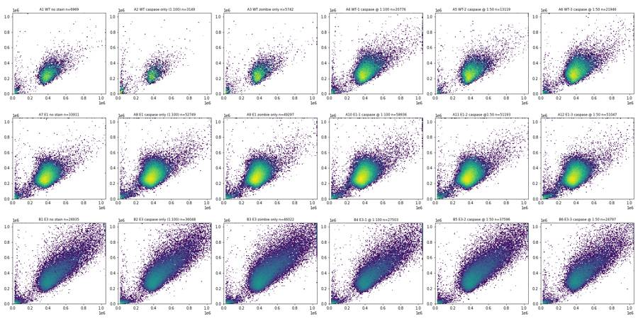
17
tool call · Read
{
"file_path": "/task/work/fsc_ah.png"
}18
tool output
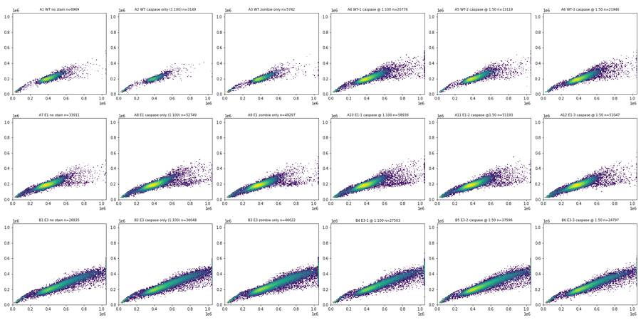
19
tool call · Read
{
"file_path": "/task/work/rl3_fsc.png"
}20
tool output
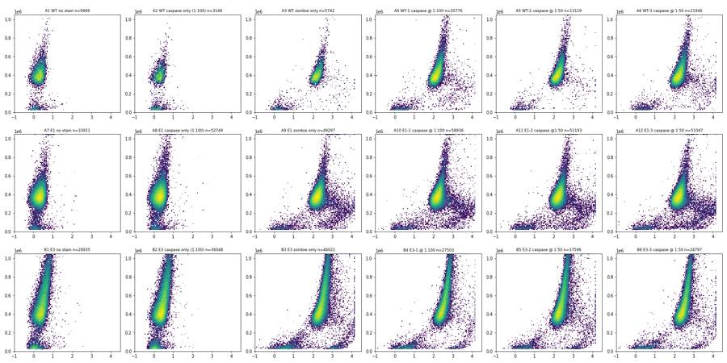
21
tool call · Read
{
"file_path": "/task/work/bl1_rl3.png"
}22
tool output
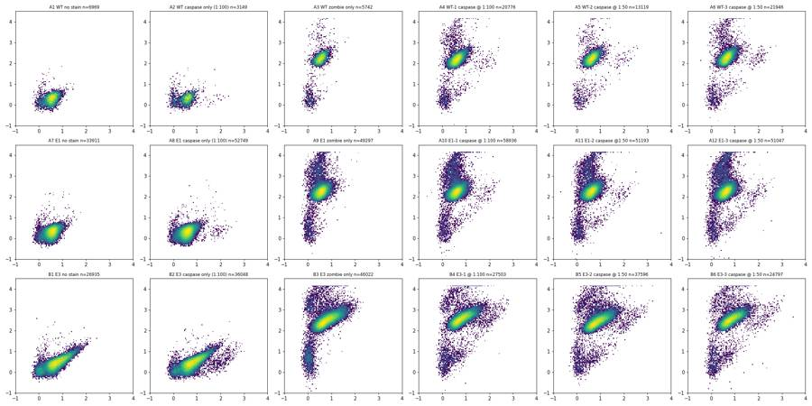
23
tool call · Read
{
"file_path": "/task/work/time.png"
}24
tool output
26
tool call · Bash
cd /task/work; cat > qc.py <<'EOF'
import numpy as np, pandas as pd, pickle, hashlib
D=pickle.load(open('D.pkl','rb'))
lay = pd.read_csv('/task/inputs/plate_layout.csv')
for _,r in lay.iterrows():
d=D[r.well]
t=d['Time'].values
print(r.well, r['sample'][:22].ljust(22), 'n',len(d),'hash',hashlib.md5(d[['FSC-A','BL1-A']].values.tobytes()).hexdigest()[:6],
'time monotonic', bool((np.diff(t)>=0).all()), 'maxgap %.2f'%np.diff(t).max(), 'Tmax %.1f'%t.max())
bins=np.arange(0,100,10)
cnt=np.histogram(t,bins)[0]
idx=np.digitize(t,bins)
med=lambda ch:[int(np.median(d[ch].values[idx==i])) if (idx==i).sum()>5 else -1 for i in range(1,len(bins)+1)]
debris=[round(100*np.mean(d['FSC-A'].values[idx==i]<150000),1) if (idx==i).sum()>5 else -1 for i in range(1,len(bins)+1)]
print(' cnt',cnt.tolist()); print(' FSC',med('FSC-A')); print(' BL1',med('BL1-A')); print(' RL3',med('RL3-A')); print(' debris%',debris)
EOF
python3 -I qc.py27
tool output
A1 WT no stain n 6969 hash 60cace time monotonic True maxgap 0.26 Tmax 97.9 cnt [444, 622, 675, 666, 847, 888, 909, 719, 905] FSC [404674, 395595, 392431, 392225, 391282, 392885, 396424, 396956, 407796, 393904] BL1 [247, 239, 245, 236, 247, 247, 244, 242, 252, 242] RL3 [112, 107, 109, 108, 109, 112, 113, 108, 121, 117] debris% [8.1, 7.7, 8.4, 10.5, 7.8, 7.8, 7.6, 8.3, 5.3, 11.6] A2 WT caspase only (1:100 n 3149 hash 8fc326 time monotonic True maxgap 0.39 Tmax 97.8 cnt [248, 278, 331, 343, 368, 406, 301, 346, 370] FSC [387279, 378380, 373195, 375637, 383904, 372179, 375700, 386553, 398959, 375911] BL1 [249, 271, 258, 266, 257, 276, 273, 264, 282, 253] RL3 [114, 104, 107, 102, 114, 119, 105, 111, 122, 127] debris% [16.9, 19.8, 19.9, 22.4, 15.8, 17.7, 16.9, 16.8, 12.7, 28.3] A3 WT zombie only n 5742 hash d94a04 time monotonic True maxgap 0.27 Tmax 97.0 cnt [323, 517, 565, 588, 633, 786, 621, 614, 655] FSC [392779, 393373, 388398, 385889, 383080, 388118, 392196, 393596, 398270, 398412] BL1 [227, 232, 229, 229, 235, 240, 250, 238, 233, 225] RL3 [11830, 12383, 11563, 11917, 11856, 11919, 12405, 12314, 12443, 12074] debris% [7.1, 10.1, 10.6, 10.2, 11.4, 8.9, 6.4, 9.6, 7.2, 8.9] A4 WT-1 caspase @ 1:100 n 20776 hash 5de04e time monotonic False maxgap 0.06 Tmax 97.0 cnt [1328, 1691, 1928, 2125, 2454, 2826, 2299, 2252, 2420] FSC [398589, 397445, 401069, 401577, 392302, 395976, 402551, 397034, 405724, 409504] BL1 [275, 287, 285, 289, 282, 291, 286, 289, 288, 295] RL3 [11061, 11030, 11106, 11283, 11110, 11165, 11294, 11442, 11184, 11563] debris% [5.0, 4.3, 3.5, 4.6, 4.2, 3.5, 3.9, 4.7, 4.3, 3.3] A5 WT-2 caspase @ 1:50 n 13119 hash 349879 time monotonic False maxgap 0.09 Tmax 96.8 cnt [989, 1168, 1279, 1309, 1548, 1789, 1611, 1320, 1539] FSC [407072, 401452, 402522, 398161, 400593, 395109, 396163, 406449, 417273, 402756] BL1 [312, 311, 311, 305, 312, 313, 311, 306, 316, 312] RL3 [12341, 12071, 12711, 12641, 12448, 12377, 12225, 12206, 12609, 12445] debris% [2.9, 3.6, 4.4, 4.0, 3.4, 2.8, 3.3, 2.9, 3.4, 4.8] A6 WT-3 caspase @ 1:50 n 21946 hash 557025 time monotonic True maxgap 0.06 Tmax 97.9 cnt [1367, 1830, 2164, 2169, 2387, 3012, 2414, 2352, 2458] FSC [395875, 391567, 393666, 393394, 393682, 390845, 388554, 391844, 400559, 402020] BL1 [317, 319, 319, 313, 319, 324, 320, 319, 317, 321] RL3 [13368, 13423, 13375, 13149, 13648, 13842, 13933, 13688, 13624, 13717] debris% [3.7, 4.3, 3.8, 4.2, 3.7, 2.3, 3.5, 3.4, 3.3, 3.3] A7 E1 no stain n 33911 hash 3fb646 time monotonic True maxgap 0.07 Tmax 97.9 cnt [1847, 2708, 3215, 3262, 3624, 4750, 4248, 4152, 3350] FSC [382432, 377634, 381279, 380735, 377688, 373407, 375346, 378239, 383447, 389992] BL1 [254, 255, 262, 258, 258, 259, 263, 260, 258, 266] RL3 [115, 115, 118, 119, 115, 120, 122, 124, 124, 123] debris% [3.6, 3.2, 3.7, 4.7, 3.8, 3.0, 3.1, 3.1, 3.3, 2.5] A8 E1 caspase only (1:100 n 52749 hash b8d68f time monotonic True maxgap 0.04 Tmax 98.0 cnt [3842, 4616, 5050, 5198, 6659, 7287, 6584, 5596, 5048] FSC [388817, 381794, 383475, 381943, 379451, 378378, 380971, 387493, 391274, 379800] BL1 [270, 274, 275, 273, 275, 277, 277, 274, 279, 275] RL3 [113, 116, 116, 114, 117, 117, 118, 116, 120, 120] debris% [2.4, 3.0, 2.7, 3.1, 2.6, 2.1, 2.4, 2.7, 2.0, 2.8] A9 E1 zombie only n 49297 hash 7b3337 time monotonic True maxgap 0.03 Tmax 98.0 cnt [2944, 4131, 4563, 4667, 5117, 6582, 5665, 5642, 5401] FSC [381641, 373045, 374257, 371825, 371410, 370946, 374076, 374181, 381536, 384676] BL1 [247, 251, 255, 250, 252, 257, 254, 254, 252, 260] RL3 [13169, 13120, 13237, 13041, 13263, 13307, 13358, 13361, 13342, 13361] debris% [3.2, 3.8, 3.3, 3.7, 3.4, 3.0, 2.5, 2.5, 2.7, 2.4] A10 E1-1 caspase @ 1:100 n 58936 hash c2f609 time monotonic True maxgap 0.03 Tmax 97.9 cnt [4068, 5172, 5739, 5898, 7199, 8375, 7405, 5994, 5621] FSC [380048, 374310, 374537, 375168, 373800, 373858, 373787, 374863, 385879, 388432] BL1 [273, 275, 279, 271, 275, 281, 276, 276, 280, 280] RL3 [12701, 12742, 12929, 12677, 12870, 13150, 12893, 12866, 12978, 12835] debris% [2.8, 3.0, 2.8, 3.4, 2.8, 2.2, 2.5, 2.8, 2.2, 3.7] A11 E1-2 caspase @1:50 n 51193 hash 13ece0 time monotonic True maxgap 0.04 Tmax 97.2 cnt [3214, 4385, 4785, 5135, 5634, 6850, 5911, 5800, 5619] FSC [383040, 378907, 377373, 377957, 372934, 374627, 378072, 380278, 388173, 390316] BL1 [290, 295, 292, 292, 290, 292, 292, 295, 294, 301] RL3 [13374, 13600, 13427, 13425, 13402, 13553, 13640, 13611, 13606, 13840] debris% [4.2, 4.0, 4.0, 3.6, 3.8, 2.9, 3.1, 3.4, 3.0, 2.6] A12 E1-3 caspase @ 1:50 n 51047 hash 208400 time monotonic True maxgap 0.04 Tmax 98.0 cnt [3269, 4356, 4884, 5366, 5902, 6783, 5865, 5428, 4882] FSC [378668, 369506, 370141, 371684, 370162, 369506, 371445, 369554, 381852, 388622] BL1 [286, 285, 285, 291, 291, 291, 295, 287, 292, 292] RL3 [13090, 13085, 13241, 13222, 13274, 13575, 13622, 13400, 13418, 13539] debris% [4.6, 4.6, 4.9, 4.9, 3.8, 3.6, 3.4, 4.0, 4.4, 3.4] B1 E3 no stain n 26935 hash abea87 time monotonic True maxgap 0.06 Tmax 97.1 cnt [1486, 1993, 2603, 2395, 3068, 3721, 3169, 3126, 3266] FSC [441037, 450531, 457245, 457054, 467209, 459522, 462443, 460889, 477937, 489564] BL1 [342, 367, 384, 382, 402, 390, 398, 394, 398, 427] RL3 [156, 169, 171, 172, 183, 180, 184, 183, 185, 199] debris% [11.6, 11.1, 9.1, 10.1, 8.0, 6.2, 6.5, 6.6, 6.8, 7.9] B2 E3 caspase only (1:100 n 36048 hash 791691 time monotonic True maxgap 0.11 Tmax 98.0 cnt [2202, 2720, 3313, 3695, 4536, 4905, 4373, 3802, 4464] FSC [446629, 442225, 446849, 449411, 460005, 462537, 455818, 459347, 490083, 472299] BL1 [410, 413, 427, 438, 447, 454, 444, 437, 499, 454] RL3 [156, 158, 165, 172, 174, 180, 173, 174, 192, 184] debris% [9.3, 9.2, 8.5, 8.1, 6.9, 5.5, 6.2, 7.1, 5.5, 9.5] B3 E3 zombie only … [1,720 more characters not shown]
29
thinking
QC on the acquisition looks clean so far, and I'm now building the gate hierarchy in FlowKit.
30
tool call · Bash
cd /task/work; cat > plots2.py <<'EOF'
import numpy as np, pandas as pd, pickle, matplotlib
matplotlib.use('Agg'); import matplotlib.pyplot as plt
from matplotlib.path import Path
import flowkit as fk
D=pickle.load(open('D.pkl','rb'))
lay = pd.read_csv('/task/inputs/plate_layout.csv')
xf=fk.transforms.LogicleTransform(param_t=1048576,param_w=0.5,param_m=4.5,param_a=0)
def L(x): return xf.apply(np.asarray(x,dtype=float))
def grid(fn, name):
fig,axs=plt.subplots(3,6,figsize=(24,12))
for ax,(_,r) in zip(axs.ravel(),lay.iterrows()):
fn(ax,D[r.well]); ax.set_title(f"{r.well} {r['sample']}",fontsize=9)
plt.tight_layout(); plt.savefig(name,dpi=70); plt.close()
def pre(d):
d=d[(d['FSC-A']>200000)&(d['FSC-A']<1.04e6)&(d['SSC-A']<1.04e6)]
return d
def a(ax,d):
d=pre(d); ax.hist2d(d['FSC-A'],d['FSC-H']/d['FSC-A'],bins=150,range=[[0,1.05e6],[0,1]],norm=matplotlib.colors.LogNorm())
grid(a,'p2_ratio.png')
def b(ax,d):
d=pre(d); ax.hist2d(L(d['RL3-A']),d['FSC-A'],bins=150,range=[[0,1],[0,1.05e6]],norm=matplotlib.colors.LogNorm())
grid(b,'p2_rl3.png')
def c(ax,d):
d=pre(d); ax.hist2d(L(d['BL1-A']),d['SSC-A'],bins=150,range=[[0,1],[0,1.05e6]],norm=matplotlib.colors.LogNorm())
grid(c,'p2_bl1_ssc.png')
def e(ax,d):
d=pre(d); ax.hist(L(d['BL1-A']),bins=200,range=(0,1),log=True,histtype='step')
grid(e,'p2_bl1_hist.png')
def f(ax,d):
d=pre(d); ax.hist2d(d['FSC-W'],d['FSC-A'],bins=150,norm=matplotlib.colors.LogNorm())
grid(f,'p2_fscw.png')
print([ (v, round(float(L([v])[0]),3)) for v in [-100,0,100,300,1000,3000,1e4,3e4,1e5,3e5,1e6]])
EOF
python3 -I plots2.py31
tool output
[(-100, 0.083), (0, 0.111), (100, 0.139), (300, 0.191), (1000, 0.305), (3000, 0.424), (10000.0, 0.547), (30000.0, 0.656), (100000.0, 0.773), (300000.0, 0.879), (1000000.0, 0.995)]
32
tool call · Read
{
"file_path": "/task/work/p2_ratio.png"
}33
tool output
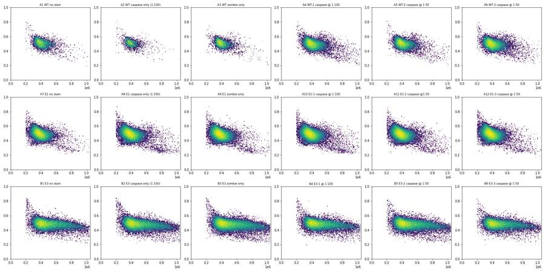
34
tool call · Read
{
"file_path": "/task/work/p2_rl3.png"
}35
tool output
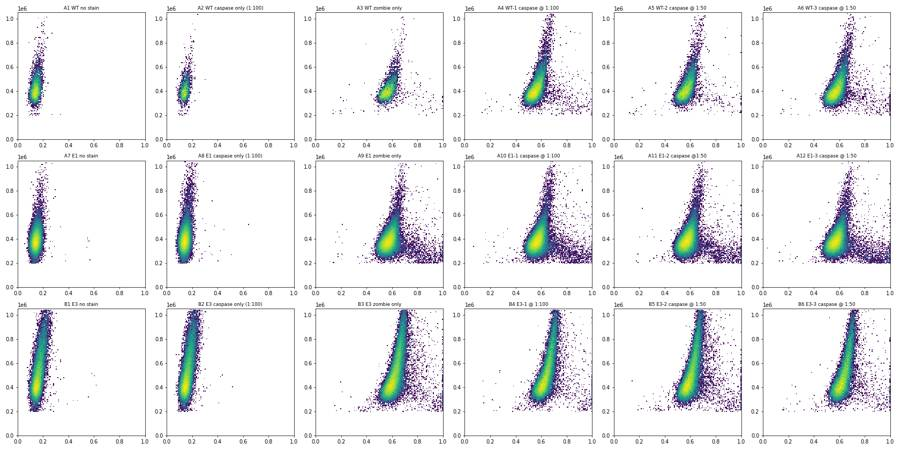
36
tool call · Read
{
"file_path": "/task/work/p2_bl1_ssc.png"
}37
tool output
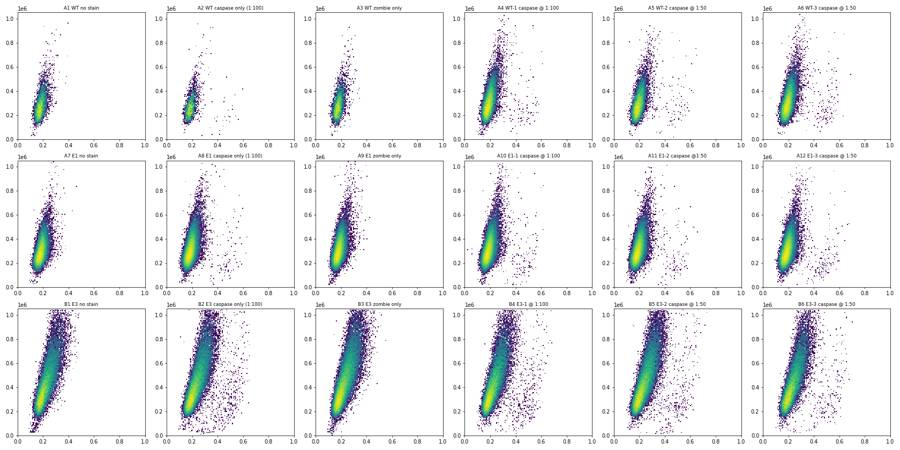
39
tool call · Bash
cd /task/work; cat > plots3.py <<'EOF'
import numpy as np, pandas as pd, pickle, matplotlib
matplotlib.use('Agg'); import matplotlib.pyplot as plt
import flowkit as fk
D=pickle.load(open('D.pkl','rb'))
lay = pd.read_csv('/task/inputs/plate_layout.csv')
xf=fk.transforms.LogicleTransform(param_t=1048576,param_w=0.5,param_m=4.5,param_a=0)
def L(x): return xf.apply(np.asarray(x,dtype=float))
def grid(fn, name):
fig,axs=plt.subplots(3,6,figsize=(24,12))
for ax,(_,r) in zip(axs.ravel(),lay.iterrows()):
fn(ax,D[r.well]); ax.set_title(f"{r.well} {r['sample']}",fontsize=9)
plt.tight_layout(); plt.savefig(name,dpi=70); plt.close()
def a(ax,d):
ax.hist2d(L(d['BL1-A']),d['FSC-A'],bins=150,range=[[0,1],[0,1.05e6]],norm=matplotlib.colors.LogNorm())
grid(a,'p3_bl1_fsc.png')
def b(ax,d):
d=d[d['FSC-A']<450000]
ax.hist2d(d['FSC-A'],d['SSC-A'],bins=150,range=[[0,4.5e5],[0,6e5]],norm=matplotlib.colors.LogNorm())
p=d[(L(d['BL1-A'])>0.37)&(d['SSC-A']<450000)]
ax.plot(p['FSC-A'],p['SSC-A'],'r.',ms=2)
grid(b,'p3_lowfsc.png')
EOF
python3 -I plots3.py40
tool output
(Bash completed with no output)
41
tool call · Read
{
"file_path": "/task/work/p3_bl1_fsc.png"
}42
tool output
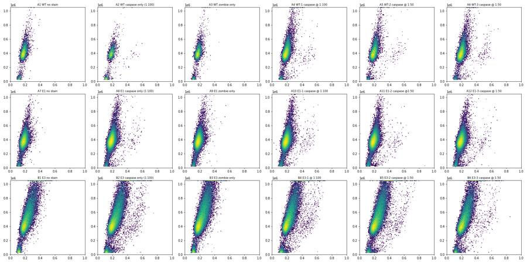
43
tool call · Read
{
"file_path": "/task/work/p3_lowfsc.png"
}44
tool output
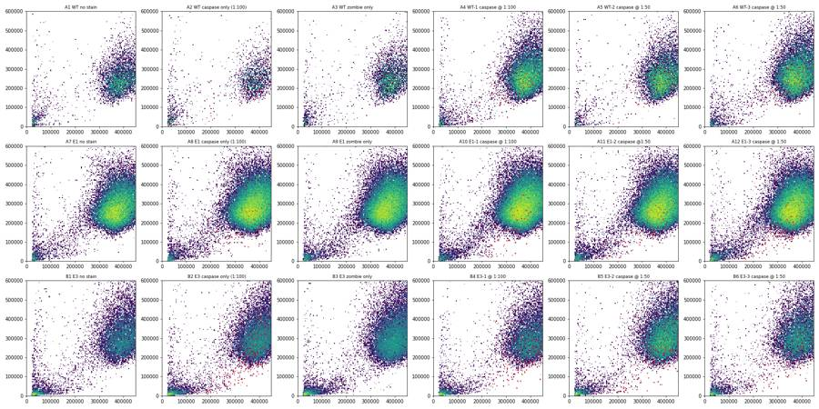
46
tool call · Bash
cd /task/work; cat > sing.py <<'EOF'
import numpy as np, pandas as pd, pickle
D=pickle.load(open('D.pkl','rb'))
for w in ['A6','A8','A10','B2','B3','B5']:
d=D[w]; d=d[(d['FSC-A']>200000)&(d['FSC-A']<1.04e6)]
r=d['FSC-H']/d['FSC-A']
print(w)
for lo,hi in [(2e5,3e5),(3e5,4e5),(4e5,5e5),(5e5,6e5),(6e5,7e5),(7e5,8.5e5),(8.5e5,1.04e6)]:
m=(d['FSC-A']>=lo)&(d['FSC-A']<hi)
h=np.histogram(r[m],bins=np.arange(0.15,0.9,0.05))[0]
print(' %7d-%7d n=%5d'%(lo,hi,m.sum()), h.tolist())
print('bins',np.arange(0.15,0.9,0.05).round(2).tolist())
EOF
python3 -I sing.py47
tool output
A6 200000- 300000 n= 709 [0, 1, 0, 0, 8, 38, 152, 270, 157, 43, 21, 13, 6, 0] 300000- 400000 n=10206 [0, 0, 0, 6, 107, 911, 3460, 4212, 1391, 118, 0, 1, 0, 0] 400000- 500000 n= 7184 [0, 1, 1, 5, 167, 1436, 3076, 2169, 295, 32, 2, 0, 0, 0] 500000- 600000 n= 1931 [0, 0, 3, 23, 122, 384, 775, 453, 122, 43, 6, 0, 0, 0] 600000- 700000 n= 612 [0, 0, 9, 46, 77, 117, 178, 120, 42, 23, 0, 0, 0, 0] 700000- 850000 n= 308 [0, 5, 25, 51, 58, 65, 62, 30, 12, 0, 0, 0, 0, 0] 850000-1040000 n= 107 [0, 7, 14, 20, 21, 26, 13, 5, 1, 0, 0, 0, 0, 0] A8 200000- 300000 n= 3134 [0, 0, 1, 31, 115, 209, 710, 1151, 634, 199, 46, 20, 15, 2] 300000- 400000 n=27082 [0, 0, 0, 48, 536, 2814, 9865, 10551, 2989, 271, 8, 0, 0, 0] 400000- 500000 n=17047 [0, 0, 3, 31, 638, 4465, 7811, 3726, 357, 16, 0, 0, 0, 0] 500000- 600000 n= 2584 [0, 1, 10, 60, 197, 620, 1106, 509, 66, 14, 1, 0, 0, 0] 600000- 700000 n= 596 [0, 2, 37, 61, 77, 106, 159, 90, 48, 15, 1, 0, 0, 0] 700000- 850000 n= 450 [1, 41, 158, 78, 30, 45, 53, 33, 9, 1, 1, 0, 0, 0] 850000-1040000 n= 168 [3, 26, 51, 25, 19, 20, 15, 7, 2, 0, 0, 0, 0, 0] A10 200000- 300000 n= 4080 [0, 0, 0, 19, 149, 278, 1010, 1506, 752, 263, 55, 25, 17, 6] 300000- 400000 n=31871 [0, 0, 0, 40, 676, 3851, 11822, 11718, 3437, 314, 12, 1, 0, 0] 400000- 500000 n=17107 [0, 1, 7, 35, 754, 4679, 7593, 3577, 430, 30, 1, 0, 0, 0] 500000- 600000 n= 2590 [0, 1, 18, 71, 219, 657, 1005, 507, 87, 18, 7, 0, 0, 0] 600000- 700000 n= 590 [0, 8, 61, 77, 74, 95, 156, 74, 34, 10, 1, 0, 0, 0] 700000- 850000 n= 453 [0, 37, 142, 71, 59, 47, 55, 26, 14, 2, 0, 0, 0, 0] 850000-1040000 n= 187 [1, 35, 40, 44, 23, 20, 11, 9, 4, 0, 0, 0, 0, 0] B2 200000- 300000 n= 703 [0, 0, 1, 11, 23, 50, 129, 202, 118, 48, 42, 40, 31, 8] 300000- 400000 n= 7972 [0, 1, 2, 22, 166, 908, 3005, 2870, 908, 74, 15, 1, 0, 0] 400000- 500000 n= 9858 [0, 1, 3, 42, 312, 1810, 4354, 2955, 364, 17, 0, 0, 0, 0] 500000- 600000 n= 5402 [1, 0, 12, 58, 229, 1218, 2476, 1262, 129, 16, 1, 0, 0, 0] 600000- 700000 n= 3492 [0, 0, 12, 67, 200, 808, 1650, 690, 51, 11, 3, 0, 0, 0] 700000- 850000 n= 3101 [0, 6, 49, 83, 237, 939, 1412, 345, 26, 4, 0, 0, 0, 0] 850000-1040000 n= 1641 [0, 9, 48, 78, 259, 718, 475, 53, 1, 0, 0, 0, 0, 0] B3 200000- 300000 n= 784 [0, 0, 2, 7, 32, 68, 202, 202, 109, 59, 35, 36, 19, 13] 300000- 400000 n= 9756 [0, 0, 2, 42, 228, 1148, 3519, 3666, 1030, 106, 14, 1, 0, 0] 400000- 500000 n=12335 [0, 0, 8, 58, 377, 2240, 5483, 3759, 395, 14, 1, 0, 0, 0] 500000- 600000 n= 7021 [0, 2, 13, 70, 344, 1571, 3155, 1678, 164, 21, 3, 0, 0, 0] 600000- 700000 n= 4741 [0, 5, 31, 106, 273, 1087, 2157, 968, 94, 17, 3, 0, 0, 0] 700000- 850000 n= 4344 [0, 6, 70, 121, 358, 1191, 1964, 573, 57, 4, 0, 0, 0, 0] 850000-1040000 n= 2274 [0, 18, 80, 96, 350, 930, 733, 60, 7, 0, 0, 0, 0, 0] B5 200000- 300000 n= 721 [0, 0, 0, 7, 24, 61, 181, 213, 101, 49, 42, 18, 17, 8] 300000- 400000 n= 8554 [0, 0, 2, 27, 181, 1025, 3217, 3157, 855, 83, 7, 0, 0, 0] 400000- 500000 n=10364 [0, 2, 6, 49, 340, 1836, 4754, 2984, 368, 23, 2, 0, 0, 0] 500000- 600000 n= 5743 [0, 0, 9, 69, 260, 1258, 2613, 1363, 146, 21, 4, 0, 0, 0] 600000- 700000 n= 3820 [0, 2, 26, 61, 213, 839, 1777, 805, 77, 20, 0, 0, 0, 0] 700000- 850000 n= 3380 [0, 15, 66, 85, 239, 936, 1550, 446, 38, 5, 0, 0, 0, 0] 850000-1040000 n= 1816 [1, 12, 59, 81, 276, 741, 577, 61, 8, 0, 0, 0, 0, 0] bins [0.15, 0.2, 0.25, 0.3, 0.35, 0.4, 0.45, 0.5, 0.55, 0.6, 0.65, 0.7, 0.75, 0.8, 0.85]
49
tool call · Bash
cd /task/work; cat > live.py <<'EOF'
import numpy as np, pandas as pd, pickle
D=pickle.load(open('D.pkl','rb'))
bins=np.arange(3.4,6.1,0.1)
print('bins',bins.round(1).tolist())
for w in ['A3','A6','A9','A12','B3','B4','B5']:
d=D[w]; d=d[(d['FSC-A']>200000)&(d['FSC-A']<1.04e6)&(d['SSC-A']<1.04e6)]
r=d['FSC-H']/d['FSC-A']; d=d[(r>0.32)&(r<0.75)]
x=np.log10(d['RL3-A'].clip(lower=1))
print(w, 'n',len(d),'<3.4:',(x<3.4).sum())
for lo,hi in [(2e5,3e5),(3e5,4e5),(4e5,5e5),(5e5,7e5),(7e5,1.04e6)]:
m=(d['FSC-A']>=lo)&(d['FSC-A']<hi)
h=np.histogram(x[m],bins=bins)[0]
print(' %7d-%7d n=%5d'%(lo,hi,m.sum()), ' '.join(map(str,h.tolist())))
EOF
python3 -I live.py50
tool output
bins [3.4, 3.5, 3.6, 3.7, 3.8, 3.9, 4.0, 4.1, 4.2, 4.3, 4.4, 4.5, 4.6, 4.7, 4.8, 4.9, 5.0, 5.1, 5.2, 5.3, 5.4, 5.5, 5.6, 5.7, 5.8, 5.9, 6.0] A3 n 5147 <3.4: 17 200000- 300000 n= 109 0 0 1 8 14 12 18 8 3 3 3 0 0 0 1 1 2 1 3 2 2 3 2 3 1 2 300000- 400000 n= 2541 0 1 10 94 428 644 627 448 173 41 24 9 9 4 3 3 3 2 0 2 2 2 3 1 0 1 400000- 500000 n= 1845 0 0 0 5 45 183 426 469 458 204 32 9 3 1 0 1 3 1 4 0 0 0 0 0 0 0 500000- 700000 n= 605 0 0 0 0 1 3 25 107 171 177 98 14 1 0 4 1 1 1 0 0 0 1 0 0 0 0 700000-1040000 n= 47 0 0 0 0 0 0 0 0 1 5 15 13 12 1 0 0 0 0 0 0 0 0 0 0 0 0 A6 n 20925 <3.4: 9 200000- 300000 n= 702 1 1 7 64 103 144 95 68 28 15 12 9 7 2 7 6 6 8 10 12 10 13 12 13 10 11 300000- 400000 n=10204 1 6 40 378 1392 2274 2488 2002 932 311 101 47 38 29 26 19 23 20 4 10 15 4 3 8 5 6 400000- 500000 n= 7178 0 0 1 10 112 478 1204 1928 2020 1042 255 44 17 8 16 11 6 5 6 4 4 1 2 1 2 0 500000- 700000 n= 2511 0 0 0 0 1 2 71 255 618 813 520 163 24 14 7 5 3 1 4 0 1 0 1 2 1 0 700000-1040000 n= 330 0 0 0 0 0 0 1 2 6 30 75 113 68 20 5 2 3 2 1 1 1 0 0 0 0 0 A9 n 47112 <3.4: 21 200000- 300000 n= 3403 3 7 27 167 441 596 604 448 241 111 66 36 31 43 36 42 47 61 50 59 42 44 44 46 34 40 300000- 400000 n=26868 0 5 76 799 2753 5053 6694 5840 3384 1203 399 139 105 67 48 61 46 45 30 26 14 17 17 14 6 9 400000- 500000 n=14289 0 0 3 32 233 1047 2447 3926 4020 1923 410 83 44 21 18 18 16 14 3 8 7 3 2 3 2 1 500000- 700000 n= 2383 0 0 0 0 6 16 78 295 649 778 391 87 28 14 6 8 4 4 1 4 3 1 3 5 0 1 700000-1040000 n= 169 0 0 0 0 0 0 0 1 4 15 40 57 34 9 3 2 3 0 1 0 0 0 0 0 0 0 A12 n 48136 <3.4: 17 200000- 300000 n= 3664 7 4 37 175 446 589 607 407 228 145 72 47 40 33 50 56 54 68 77 64 63 62 73 65 68 75 300000- 400000 n=27529 5 13 77 776 2894 5235 6713 5986 3448 1256 368 171 118 85 48 51 48 32 33 20 24 17 22 23 17 17 400000- 500000 n=14179 0 0 2 29 228 949 2374 3887 4009 2019 463 77 32 25 14 18 9 14 5 8 2 1 5 4 1 2 500000- 700000 n= 2541 0 1 0 0 1 7 67 301 647 869 421 135 33 14 11 2 9 2 4 2 3 1 1 2 3 0 700000-1040000 n= 223 0 0 0 0 1 0 0 1 9 17 59 74 36 14 3 1 2 3 1 0 0 1 0 0 0 0 B3 n 40333 <3.4: 17 200000- 300000 n= 747 6 9 7 16 48 98 108 103 75 47 20 5 12 12 5 5 8 7 11 8 7 12 17 22 17 24 300000- 400000 n= 9742 2 2 12 43 309 1133 2157 2635 1771 871 322 136 79 37 30 25 24 19 19 18 13 10 6 7 7 10 400000- 500000 n=12304 0 0 1 4 33 220 1197 2756 3596 2485 1190 417 172 63 39 24 23 16 9 8 8 4 6 6 2 2 500000- 700000 n=11594 0 0 0 2 3 1 55 336 1499 3317 3619 1815 564 153 48 50 28 28 18 15 12 4 4 8 2 3 700000-1040000 n= 5946 0 0 0 0 0 0 0 1 24 237 1310 2184 1516 432 112 44 20 16 16 10 4 6 4 1 3 0 B4 n 24050 <3.4: 15 200000- 300000 n= 443 2 3 1 10 20 28 49 72 53 35 20 14 5 3 4 0 2 4 4 3 1 13 9 26 18 10 300000- 400000 n= 5601 1 0 5 13 61 292 718 1274 1466 947 398 170 63 33 21 13 7 19 8 6 12 5 4 7 6 10 400000- 500000 n= 7281 0 1 1 1 4 54 266 777 1716 2160 1402 523 185 64 31 15 16 9 8 8 3 6 2 3 0 2 500000- 700000 n= 7090 0 0 0 0 0 1 7 47 294 1011 2141 2116 1003 276 69 37 26 10 10 7 6 3 2 4 3 3 700000-1040000 n= 3635 0 0 0 0 1 0 1 0 2 11 162 824 1405 907 210 48 27 14 4 5 5 2 3 0 1 0 B5 n 33636 <3.4: 20 200000- 300000 n= 693 6 2 8 23 54 101 118 74 57 17 10 13 6 7 9 11 4 13 8 11 14 21 24 21 14 10 300000- 400000 n= 8545 3 4 10 112 616 1439 2314 1985 1036 461 183 93 61 25 26 22 24 16 17 8 10 12 7 14 8 9 400000- 500000 n=10338 0 0 5 9 106 560 1686 2983 2611 1367 510 165 94 57 37 39 22 10 17 12 10 4 2 0 2 4 500000- 700000 n= 9435 0 0 0 0 1 19 145 790 2197 3099 2012 703 203 82 48 27 31 24 18 6 2 4 3 4 1 3 700000-1040000 n= 4625 0 0 0 0 0 0 0 4 51 639 1667 1465 522 143 45 35 11 15 11 5 3 1 2 2 1 0
52
agent
Status: scatter/singlet/viability boundaries are worked out; now setting the cleaved-caspase-3⁺ gate against the unstained and Zombie-only (FMO) controls, then I'll write all deliverables.
53
tool call · Bash
cd /task/work; cat > casp.py <<'EOF'
import numpy as np, pandas as pd, pickle, flowkit as fk
D=pickle.load(open('D.pkl','rb'))
xf=fk.transforms.LogicleTransform(param_t=1048576,param_w=0.5,param_m=4.5,param_a=0)
def L(x): return xf.apply(np.asarray(x,dtype=float))
bins=np.arange(0.14,0.80,0.03)
print('bins',bins.round(2).tolist())
for w in ['A1','A3','A7','A9','B1','B3','A6','A8','A12','B2','B5']:
d=D[w]; d=d[(d['FSC-A']>200000)&(d['FSC-A']<1.04e6)&(d['SSC-A']<1.04e6)]
r=d['FSC-H']/d['FSC-A']; d=d[(r>0.32)&(r<0.75)]
x=L(d['BL1-A'])
print(w,'n',len(d))
for lo,hi in [(0,1.5e5),(1.5e5,2.5e5),(2.5e5,3.5e5),(3.5e5,5e5),(5e5,7e5),(7e5,1.04e6)]:
m=(d['SSC-A']>=lo)&(d['SSC-A']<hi)
h=np.histogram(x[m],bins=bins)[0]
print(' %7d-%7d n=%5d'%(lo,hi,m.sum()), ' '.join(map(str,h.tolist())))
EOF
python3 -I casp.py54
tool output
bins [0.14, 0.17, 0.2, 0.23, 0.26, 0.29, 0.32, 0.35, 0.38, 0.41, 0.44, 0.47, 0.5, 0.53, 0.56, 0.59, 0.62, 0.65, 0.68, 0.71, 0.74, 0.77, 0.8]
A1 n 6349
0- 150000 n= 141 94 27 2 0 0 0 0 0 0 0 0 0 0 0 0 0 0 0 0 0 0 0
150000- 250000 n= 2581 1192 1073 181 13 2 0 0 0 0 0 0 0 0 0 0 0 0 0 0 0 0 0
250000- 350000 n= 2438 634 1224 450 73 9 4 0 0 0 0 0 0 0 0 0 0 0 0 0 0 0 0
350000- 500000 n= 1035 62 418 408 116 20 7 1 1 0 0 0 0 0 0 0 0 0 0 0 0 0 0
500000- 700000 n= 140 2 22 56 33 16 8 1 0 2 0 0 0 0 0 0 0 0 0 0 0 0 0
700000-1040000 n= 14 0 0 2 4 4 2 1 0 1 0 0 0 0 0 0 0 0 0 0 0 0 0
A3 n 5147
0- 150000 n= 130 69 44 1 0 0 0 0 0 0 0 0 0 0 0 0 0 0 0 0 0 0 0
150000- 250000 n= 1990 999 747 96 8 3 0 0 0 0 0 0 0 0 0 0 0 0 0 0 0 0 0
250000- 350000 n= 2028 575 1056 283 44 13 1 1 0 0 0 0 0 0 0 0 0 0 0 0 0 0 0
350000- 500000 n= 874 94 388 297 74 12 2 3 0 0 0 0 0 0 0 0 0 0 0 0 0 0 0
500000- 700000 n= 109 2 15 42 34 9 6 1 0 0 0 0 0 0 0 0 0 0 0 0 0 0 0
700000-1040000 n= 16 0 0 4 6 4 2 0 0 0 0 0 0 0 0 0 0 0 0 0 0 0 0
A7 n 32357
0- 150000 n= 213 127 42 4 0 0 0 0 0 0 0 0 0 0 0 0 0 0 0 0 0 0 0
150000- 250000 n= 9631 4633 3670 607 54 12 3 0 0 0 0 0 0 0 0 0 0 0 0 0 0 0 0
250000- 350000 n=15047 3741 7968 2693 330 76 20 8 3 0 0 0 0 0 0 0 0 0 0 0 0 0 0
350000- 500000 n= 6774 425 3171 2516 500 110 30 12 3 0 0 0 0 0 0 0 0 0 0 0 0 0 0
500000- 700000 n= 642 9 118 247 187 54 18 4 3 0 1 0 0 0 0 0 0 0 0 0 0 0 0
700000-1040000 n= 50 0 1 1 16 16 9 3 3 0 0 1 0 0 0 0 0 0 0 0 0 0 0
A9 n 47112
0- 150000 n= 288 164 53 4 3 0 0 0 0 0 0 0 0 0 0 0 0 0 0 0 0 0 0
150000- 250000 n=12392 6491 4290 528 68 14 3 0 0 0 0 0 0 0 0 0 0 0 0 0 0 0 0
250000- 350000 n=21716 6355 11217 3193 408 78 27 3 1 0 0 0 0 0 0 0 0 0 0 0 0 0 0
350000- 500000 n=11564 1043 5792 3841 665 132 46 16 6 1 0 0 0 0 0 0 0 0 0 0 0 0 0
500000- 700000 n= 1058 21 233 409 262 88 26 13 3 1 2 0 0 0 0 0 0 0 0 0 0 0 0
700000-1040000 n= 94 1 4 8 25 26 15 6 7 2 0 0 0 0 0 0 0 0 0 0 0 0 0
B1 n 23256
0- 150000 n= 110 58 15 2 0 0 0 0 0 0 0 0 0 0 0 0 0 0 0 0 0 0 0
150000- 250000 n= 2484 1059 1068 195 17 5 2 1 0 0 0 0 0 0 0 0 0 0 0 0 0 0 0
250000- 350000 n= 6457 1444 3065 1413 366 75 18 2 2 0 0 0 0 0 0 0 0 0 0 0 0 0 0
350000- 500000 n= 7323 274 1694 2586 1678 725 272 71 13 1 1 0 0 0 0 0 0 0 0 0 0 0 0
500000- 700000 n= 4708 7 137 723 1295 1229 820 334 121 29 8 4 1 0 0 0 0 0 0 0 0 0 0
700000-1040000 n= 2174 0 1 32 240 497 523 448 279 103 35 12 4 0 0 0 0 0 0 0 0 0 0
B3 n 40333
0- 150000 n= 169 83 28 5 2 0 0 0 0 0 0 0 0 0 0 0 0 0 0 0 0 0 0
150000- 250000 n= 4718 2262 1785 292 46 6 3 0 0 0 0 0 0 0 0 0 0 0 0 0 0 0 0
250000- 350000 n=11114 2511 5356 2395 515 124 42 4 2 0 0 0 0 0 0 0 0 0 0 0 0 0 0
350000- 500000 n=12171 431 2919 4271 2779 1215 410 108 22 8 3 1 1 0 0 0 0 0 0 0 0 0 0
500000- 700000 n= 8372 4 226 1261 2318 2184 1408 640 243 63 22 2 1 0 0 0 0 0 0 0 0 0 0
700000-1040000 n= 3789 2 2 45 363 844 980 815 444 189 63 33 6 2 1 0 0 0 0 0 0 0 0
A6 n 20925
0- 150000 n= 286 117 122 9 2 2 0 1 0 1 2 2 2 1 2 0 0 0 0 0 0 0 0
150000- 250000 n= 6176 1811 3107 945 101 22 9 2 4 2 6 6 15 12 7 3 0 1 0 0 0 0 0
250000- 350000 n= 8588 1033 4031 2865 489 72 24 4 2 2 1 4 3 9 6 2 1 0 0 0 0 0 0
350000- 500000 n= 4891 76 1173 2314 1009 215 59 14 5 5 2 2 1 3 5 6 1 0 0 0 0 0 0
500000- 700000 n= 873 1 40 236 314 174 66 19 5 6 2 1 0 2 4 3 0 0 0 0 0 0 0
700000-1040000 n= 111 1 0 6 14 41 27 13 6 0 1 0 0 1 0 1 0 0 0 0 0 0 0
A8 n 50571
0- 150000 n= 289 154 47 2 1 0 0 0 4 1 3 5 7 5 0 0 0 0 0 0 0 0 0
150000- 250000 n=13494 6156 5510 862 111 24 8 1 4 1 5 7 6 2 3 2 1 0 0 0 0 0 0
250000- 350000 n=23496 5244 12323 4826 605 121 26 12 1 1 0 5 2 2 2 0 0 1 0 0 0 0 0
350000- 500000 n=11872 648 4880 4941 1068 211 73 15 7 2 1 1 3 3 3 2 0 1 0 0 0 0 0
500000- 700000 n= 1289 5 174 547 357 143 42 8 5 1 1 0 1 2 1 1 0 0 0 0 0 0 0
700000-1040000 n= 130 1 1 7 39 49 16 6 6 2 1 1 0 0 0 1 0 0 0 0 0 0 0
A12 n 48136
0- 150000 n= 361 174 77 8 2 3 2 0 4 5 5 17 12 5 0 1 0 0 0 0 0 0 0
150000- 250000 n=13400 5480 5929 1176 150 31 11 3 3 2 4 14 17 8 7 3 1 0 0 0 0 0 0
250000- 350000 n=21806 3829 11119 5547 902 161 40 9 4 4 3 1 4 6 3 6 1 0 0 0 0 0 0
350000- 500000 n=11344 346 3718 5290 1559 304 88 17 9 2 0 0 0 4 1 2 1 1 0 0 0 0 0
500000- 700000 n= 1124 10 77 399 406 159 38 20 5 2 0 0 0 3 0 1 0 1 2 0 0 0 0
700000-1040000 n= 101 1 0 4 19 46 14 9 4 2 0 0 0 0 1 0 0 1 0 0 0 0 0
B2 n 31518
0- 150000 n= 146 26 15 8 10 10 6 6 5 11 9 11 5 4 2 0 0 0 0 0 0 0 0
150000- 250000 n= 3685 1393 1608 391 51 15 6 5 7 11 9 17 14 16 9 2 0 0 0 0 0 0 0
250000- 350000 n= 9028 1194 4070 2704 717 157 34 14 13 6 8 6 18 20 16 7 3 1 0 0 0 0 0
350000- 500000 n= 9596 137 1446 3193 2687 1374 472 155 33 11 7 13 10 12 20 16 7 2 0 0 0 0 0
500000- 700000 n= 6134 1 52 505 1398 1810 1315 674 239 71 17 7 6 12 7 8 8 4 0 0 0 0 0
700000-1040000 n= 2929 0 1 13 142 554 788 691 414 186 78 19 11 2 7 6 8 5 2 0 0 0 0
B5 n 33636
0- 150000 n= 108 35 21 5 5 1 1 1 6 4 9 5 1 4 1 1 0 0 0 0 0 0 0
150000- 250000 n= 3768 1155 1808 537 58 20 10 4 9 3 10 6 20 15 11 6 1 1 0 0 0 0 0
250000- 350000 n= 9362 951 3946 3201 902 203 50 15 10 7 5 5 9 6 14 7 5 1 0 0 0 0 0
350000- 500000 n=10507 87 1239 3392 3170 1700 642 160 43 15 5 2 9 4 14 12 7 3 1 0 0 0 0
500000- 700000 n= 6808 1 57 435 1490 2003 1627 783 269 83 25 8 4 7 5 2 4 3 2 0 0 0 0
700000-1040000 n= 3083 2 0 4 115 502 773 806 493 254 74 19 6 2 4 8 5 11 3 1 1 0 056
tool call · Bash
cd /task/work; python3 -I -c "
import flowkit as fk, inspect
print(fk.__version__)
print(inspect.signature(fk.Dimension.__init__))
print(inspect.signature(fk.gates.PolygonGate.__init__))
print(inspect.signature(fk.GatingStrategy.add_gate))
print(inspect.signature(fk.GatingStrategy.add_transform))
print(inspect.signature(fk.GatingStrategy.gate_sample))
print(inspect.signature(fk.export_gatingml))
print(inspect.signature(fk.parse_gating_xml))
print([m for m in dir(fk.GatingResults) if not m.startswith('_')])
"57
tool output (error)
Exit code 1 Traceback (most recent call last): File "<string>", line 11, in <module> AttributeError: module 'flowkit' has no attribute 'GatingResults' 1.2.3 (self, dimension_id, compensation_ref='uncompensated', transformation_ref=None, range_min=None, range_max=None) (self, gate_name, dimensions, vertices, use_complement=False) (self, gate, gate_path, sample_id=None) (self, transform_id, transform) (self, sample, cache_events=False, verbose=False) (gating_strategy, file_handle, sample_id=None) (xml_file_or_path)
58
tool call · Bash
cd /task/work; cat > gate.py <<'EOF'
import flowkit as fk, numpy as np, pandas as pd, os
lay = pd.read_csv('/task/inputs/plate_layout.csv')
OUT='/task/outputs'
xf=fk.transforms.LogicleTransform(param_t=1048576,param_w=0.5,param_m=4.5,param_a=0)
def L(v): return float(xf.apply(np.array([float(v)]))[0])
gs=fk.GatingStrategy()
gs.add_transform('logicle',xf)
U='uncompensated'
fsc=fk.Dimension('FSC-A',compensation_ref=U); ssc=fk.Dimension('SSC-A',compensation_ref=U)
fsch=fk.Dimension('FSC-H',compensation_ref=U)
rl3=fk.Dimension('RL3-A',compensation_ref=U,transformation_ref='logicle')
bl1=fk.Dimension('BL1-A',compensation_ref=U,transformation_ref='logicle')
# 1 cells: FSC-A vs SSC-A, drop debris (FSC-A<200k) and events on the off-scale rail (>=1.04e6)
cells=fk.gates.PolygonGate('cells',[fsc,ssc],[(200000,20000),(1040000,20000),(1040000,1040000),(450000,1040000),(200000,450000)])
gs.add_gate(cells,('root',))
# 2 singlets: FSC-A vs FSC-H band (H/A ~0.32-0.75)
singlets=fk.gates.PolygonGate('singlets',[fsc,fsch],[(180000,57600),(1050000,336000),(1050000,650000),(180000,160000)])
gs.add_gate(singlets,('root','cells'))
# 3 live / dead: Zombie NIR (RL3-A, logicle) vs FSC-A; boundary log10(RL3)=4.35+0.8e-6*FSC (tracks size-dependent dye uptake)
def bx(f): return L(10**(4.35+0.8e-6*f))
live=fk.gates.PolygonGate('live',[rl3,fsc],[(-0.2,150000),(bx(150000),150000),(bx(1100000),1100000),(-0.2,1100000)])
gs.add_gate(live,('root','cells','singlets'))
dead=fk.gates.PolygonGate('dead',[rl3,fsc],[(bx(150000),150000),(1.2,150000),(1.2,1100000),(bx(1100000),1100000)])
gs.add_gate(dead,('root','cells','singlets'))
# 4 cleaved caspase-3 AF488 (BL1-A, logicle) vs SSC-A; diagonal edge follows autofluorescence that scales with SSC
cv=[(0.34,0),(0.34+0.24e-6*1100000,1100000),(1.2,1100000),(1.2,0)]
casp=fk.gates.PolygonGate('casp3_pos',[bl1,ssc],cv)
gs.add_gate(casp,('root','cells','singlets','live'))
casp_all=fk.gates.PolygonGate('casp3_pos_all_singlets',[bl1,ssc],cv)
gs.add_gate(casp_all,('root','cells','singlets'))
casp_dead=fk.gates.PolygonGate('casp3_pos_dead',[bl1,ssc],cv)
gs.add_gate(casp_dead,('root','cells','singlets','dead'))
with open(f'{OUT}/gates.xml','wb') as fh: fk.export_gatingml(gs,fh)
gs2=fk.parse_gating_xml(f'{OUT}/gates.xml')
print(gs2.get_gate_ids())
pops=[('cells','cells','all_events'),('singlets','singlets','cells'),('live','live','singlets'),('casp3_pos','marker_positive','live'),
('dead','other','singlets'),('casp3_pos_all_singlets','other','singlets'),('casp3_pos_dead','other','dead')]
rows=[]
for _,r in lay.iterrows():
s=fk.Sample('/task/inputs/raw/'+r.file, ignore_offset_error=True)
res=gs2.gate_sample(s); rep=res.report.set_index('gate_name')
res1=gs.gate_sample(s); rep1=res1.report.set_index('gate_name')
cnt={'all_events':s.event_count}
rows.append(dict(file=r.file,well=r.well,population='all_events',role='other',parent='none',count=s.event_count,pct_of_parent=''))
for p,role,par in pops:
c=int(rep.loc[p,'count']); assert c==int(rep1.loc[p,'count'])
cnt[p]=c
pc=cnt[par]
rows.append(dict(file=r.file,well=r.well,population=p,role=role,parent=par,count=c,pct_of_parent=(round(100*c/pc,4) if pc>0 else '')))
assert cnt['live']+cnt['dead']==cnt['singlets'], (r.well,cnt)
assert cnt['casp3_pos']+cnt['casp3_pos_dead']==cnt['casp3_pos_all_singlets']
c=pd.DataFrame(rows)[['file','well','population','role','parent','count','pct_of_parent']]
c.to_csv(f'{OUT}/counts.csv',index=False)
w=c.pivot(index='well',columns='population',values='count').loc[lay.well]
w['sample']=lay.set_index('well')['sample']
for a,b in [('cells','all_events'),('singlets','cells'),('live','singlets'),('casp3_pos','live'),('casp3_pos_all_singlets','singlets'),('casp3_pos_dead','dead')]:
w['%'+a]=(100*w[a]/w[b]).round(3)
pd.set_option('display.width',250); pd.set_option('display.max_columns',50)
print(w[['sample','all_events','cells','singlets','live','dead','casp3_pos','casp3_pos_all_singlets','casp3_pos_dead']].to_string())
print(w[['sample','%cells','%singlets','%live','%casp3_pos','%casp3_pos_all_singlets','%casp3_pos_dead']].to_string())
w.to_csv('wide.csv')
EOF
python3 -I gate.py59
tool output (error)
Exit code 1
[('cells', ('root',)), ('singlets', ('root', 'cells')), ('live', ('root', 'cells', 'singlets')), ('casp3_pos', ('root', 'cells', 'singlets', 'live')), ('dead', ('root', 'cells', 'singlets')), ('casp3_pos_dead', ('root', 'cells', 'singlets', 'dead')), ('casp3_pos_all_singlets', ('root', 'cells', 'singlets'))]
Traceback (most recent call last):
File "/task/work/gate.py", line 50, in <module>
assert cnt['live']+cnt['dead']==cnt['singlets'], (r.well,cnt)
^^^^^^^^^^^^^^^^^^^^^^^^^^^^^^^^^^^^^^^^
AssertionError: ('A11', {'all_events': 51193, 'cells': 49034, 'singlets': 48706, 'live': 47423, 'casp3_pos': 92, 'dead': 1282, 'casp3_pos_all_singlets': 94, 'casp3_pos_dead': 2})61
tool call · Bash
cd /task/work; sed -i 's/(-0.2,150000)/(-5.0,150000)/; s/(-0.2,1100000)/(-5.0,1100000)/; s/(1.2,150000),(1.2,1100000)/(5.0,150000),(5.0,1100000)/; s/(1.2,1100000),(1.2,0)\]/(5.0,1100000),(5.0,0)]/' gate.py; grep -n "5.0" gate.py; python3 -I gate.py
62
tool output
14:cells=fk.gates.PolygonGate('cells',[fsc,ssc],[(200000,20000),(1040000,20000),(1040000,1040000),(450000,1040000),(200000,450000)])
17:singlets=fk.gates.PolygonGate('singlets',[fsc,fsch],[(180000,57600),(1050000,336000),(1050000,650000),(180000,160000)])
19:# 3 live / dead: Zombie NIR (RL3-A, logicle) vs FSC-A; boundary log10(RL3)=4.35+0.8e-6*FSC (tracks size-dependent dye uptake)
20:def bx(f): return L(10**(4.35+0.8e-6*f))
21:live=fk.gates.PolygonGate('live',[rl3,fsc],[(-5.0,150000),(bx(150000),150000),(bx(1100000),1100000),(-5.0,1100000)])
23:dead=fk.gates.PolygonGate('dead',[rl3,fsc],[(bx(150000),150000),(5.0,150000),(5.0,1100000),(bx(1100000),1100000)])
26:cv=[(0.34,0),(0.34+0.24e-6*1100000,1100000),(5.0,1100000),(5.0,0)]
[('cells', ('root',)), ('singlets', ('root', 'cells')), ('live', ('root', 'cells', 'singlets')), ('casp3_pos', ('root', 'cells', 'singlets', 'live')), ('dead', ('root', 'cells', 'singlets')), ('casp3_pos_dead', ('root', 'cells', 'singlets', 'dead')), ('casp3_pos_all_singlets', ('root', 'cells', 'singlets'))]
population sample all_events cells singlets live dead casp3_pos casp3_pos_all_singlets casp3_pos_dead
well
A1 WT no stain 6969 6378 6354 6354 0 0 0 0
A2 WT caspase only (1:100) 3149 2544 2538 2538 0 22 22 0
A3 WT zombie only 5742 5167 5146 5070 76 0 0 0
A4 WT-1 caspase @ 1:100 20776 19726 19575 19243 332 77 77 0
A5 WT-2 caspase @ 1:50 13119 12597 12516 12366 150 70 70 0
A6 WT-3 caspase @ 1:50 21946 21038 20927 20454 473 116 117 1
A7 E1 no stain 33911 32497 32355 32355 0 0 0 0
A8 E1 caspase only (1:100) 52749 51008 50564 50564 0 82 82 0
A9 E1 zombie only 49297 47411 47111 45811 1300 0 0 0
A10 E1-1 caspase @ 1:100 58936 56823 56358 54782 1576 97 98 1
A11 E1-2 caspase @1:50 51193 49034 48706 47424 1282 92 94 2
A12 E1-3 caspase @ 1:50 51047 48441 48140 46543 1597 144 146 2
B1 E3 no stain 26935 23403 23274 23274 0 0 0 0
B2 E3 caspase only (1:100) 36048 31744 31536 31536 0 355 355 0
B3 E3 zombie only 46022 40634 40325 39308 1017 2 2 0
B4 E3-1 @ 1:100 27503 24221 24058 23286 772 268 280 12
B5 E3-2 caspase @ 1:50 37596 33892 33641 32720 921 262 266 4
B6 E3-3 caspase @ 1:50 24797 22199 22077 21341 736 184 190 6
population sample %cells %singlets %live %casp3_pos %casp3_pos_all_singlets %casp3_pos_dead
well
A1 WT no stain 91.520 99.624 100.000 0.000 0.000 NaN
A2 WT caspase only (1:100) 80.788 99.764 100.000 0.867 0.867 NaN
A3 WT zombie only 89.986 99.594 98.523 0.000 0.000 0.000
A4 WT-1 caspase @ 1:100 94.946 99.235 98.304 0.400 0.393 0.000
A5 WT-2 caspase @ 1:50 96.021 99.357 98.802 0.566 0.559 0.000
A6 WT-3 caspase @ 1:50 95.863 99.472 97.740 0.567 0.559 0.211
A7 E1 no stain 95.830 99.563 100.000 0.000 0.000 NaN
A8 E1 caspase only (1:100) 96.699 99.130 100.000 0.162 0.162 NaN
A9 E1 zombie only 96.174 99.367 97.241 0.000 0.000 0.000
A10 E1-1 caspase @ 1:100 96.415 99.182 97.204 0.177 0.174 0.063
A11 E1-2 caspase @1:50 95.783 99.331 97.368 0.194 0.193 0.156
A12 E1-3 caspase @ 1:50 94.895 99.379 96.683 0.309 0.303 0.125
B1 E3 no stain 86.887 99.449 100.000 0.000 0.000 NaN
B2 E3 caspase only (1:100) 88.060 99.345 100.000 1.126 1.126 NaN
B3 E3 zombie only 88.293 99.240 97.478 0.005 0.005 0.000
B4 E3-1 @ 1:100 88.067 99.327 96.791 1.151 1.164 1.554
B5 E3-2 caspase @ 1:50 90.148 99.259 97.262 0.801 0.791 0.434
B6 E3-3 caspase @ 1:50 89.523 99.450 96.666 0.862 0.861 0.81564
tool call · Bash
cd /task/work; cat > qc2.py <<'EOF'
import flowkit as fk, numpy as np, pandas as pd, pickle
lay = pd.read_csv('/task/inputs/plate_layout.csv')
D=pickle.load(open('D.pkl','rb'))
keys=None
M={}
for _,r in lay.iterrows():
s=fk.Sample('/task/inputs/raw/'+r.file, ignore_offset_error=True); M[r.well]=s.get_metadata()
allk=set().union(*[set(m) for m in M.values()])
for k in sorted(allk):
vals=[str(M[w].get(k)) for w in lay.well]
if len(set(vals))>1 and k not in('btim','etim','fil','wellid','tot','enddata','spillover') and not k.startswith('flowjo'):
print(k, vals)
for w in lay.well:
d=D[w]; t=d['Time']
e=d[t<3];
print(w, 'first3s n',len(e),'rate 1st s',int((t<1).sum()),'2nd',int(((t>=1)&(t<2)).sum()),'3rd',int(((t>=2)&(t<3)).sum()),'mean rate',int(len(d)/98),
'RL3 sat%',round(100*(d['RL3-A']>=1048575).mean(),3),'BL1 sat',int((d['BL1-A']>=1048575).sum()), 'FSC rail%',round(100*(d['FSC-A']>=1048575).mean(),2),'SSC rail%',round(100*(d['SSC-A']>=1048575).mean(),2),
'neg FSC',int((d['FSC-A']<=0).sum()))
d=D['B5']; t=d['Time']
for lo,hi in [(0,1),(1,2),(2,3),(3,5),(5,10),(10,98)]:
e=d[(t>=lo)&(t<hi)]
if len(e): print('B5',lo,hi,len(e),'FSC med',int(e['FSC-A'].median()),'BL1',int(e['BL1-A'].median()),'RL3',int(e['RL3-A'].median()),'debris%',round(100*(e['FSC-A']<150000).mean(),1))
EOF
python3 -I qc2.py65
tool output
#coincidentcount ['5', '2', '10', '56', '21', '35', '76', '219', '190', '244', '167', '174', '52', '93', '158', '54', '101', '32'] vol ['164000', '163000', '162000', '162000', '162000', '164000', '164000', '164000', '164000', '164000', '162000', '164000', '162000', '164000', '164000', '162000', '164000', '162000'] A1 first3s n 110 rate 1st s 45 2nd 27 3rd 38 mean rate 71 RL3 sat% 0.0 BL1 sat 0 FSC rail% 0.13 SSC rail% 0.17 neg FSC 0 A2 first3s n 60 rate 1st s 29 2nd 12 3rd 19 mean rate 32 RL3 sat% 0.0 BL1 sat 0 FSC rail% 0.1 SSC rail% 0.38 neg FSC 0 A3 first3s n 70 rate 1st s 21 2nd 25 3rd 24 mean rate 58 RL3 sat% 0.104 BL1 sat 0 FSC rail% 0.16 SSC rail% 0.24 neg FSC 0 A4 first3s n 278 rate 1st s 60 2nd 83 3rd 135 mean rate 212 RL3 sat% 0.091 BL1 sat 0 FSC rail% 0.32 SSC rail% 0.22 neg FSC 0 A5 first3s n 204 rate 1st s 54 2nd 49 3rd 101 mean rate 133 RL3 sat% 0.13 BL1 sat 0 FSC rail% 0.14 SSC rail% 0.14 neg FSC 0 A6 first3s n 265 rate 1st s 112 2nd 84 3rd 69 mean rate 223 RL3 sat% 0.187 BL1 sat 0 FSC rail% 0.17 SSC rail% 0.13 neg FSC 0 A7 first3s n 380 rate 1st s 179 2nd 83 3rd 118 mean rate 346 RL3 sat% 0.0 BL1 sat 0 FSC rail% 0.05 SSC rail% 0.1 neg FSC 0 A8 first3s n 949 rate 1st s 408 2nd 230 3rd 311 mean rate 538 RL3 sat% 0.0 BL1 sat 0 FSC rail% 0.07 SSC rail% 0.1 neg FSC 0 A9 first3s n 674 rate 1st s 310 2nd 158 3rd 206 mean rate 503 RL3 sat% 0.071 BL1 sat 0 FSC rail% 0.07 SSC rail% 0.09 neg FSC 0 A10 first3s n 988 rate 1st s 457 2nd 215 3rd 316 mean rate 601 RL3 sat% 0.105 BL1 sat 0 FSC rail% 0.1 SSC rail% 0.1 neg FSC 0 A11 first3s n 685 rate 1st s 155 2nd 192 3rd 338 mean rate 522 RL3 sat% 0.145 BL1 sat 0 FSC rail% 0.07 SSC rail% 0.1 neg FSC 0 A12 first3s n 687 rate 1st s 302 2nd 175 3rd 210 mean rate 520 RL3 sat% 0.163 BL1 sat 0 FSC rail% 0.06 SSC rail% 0.09 neg FSC 0 B1 first3s n 347 rate 1st s 90 2nd 112 3rd 145 mean rate 274 RL3 sat% 0.0 BL1 sat 0 FSC rail% 2.92 SSC rail% 3.61 neg FSC 0 B2 first3s n 595 rate 1st s 242 2nd 136 3rd 217 mean rate 367 RL3 sat% 0.0 BL1 sat 0 FSC rail% 2.92 SSC rail% 3.32 neg FSC 0 B3 first3s n 682 rate 1st s 279 2nd 180 3rd 223 mean rate 469 RL3 sat% 0.322 BL1 sat 0 FSC rail% 3.68 SSC rail% 3.98 neg FSC 0 B4 first3s n 358 rate 1st s 70 2nd 111 3rd 177 mean rate 280 RL3 sat% 0.473 BL1 sat 0 FSC rail% 3.42 SSC rail% 3.65 neg FSC 0 B5 first3s n 99 rate 1st s 1 2nd 4 3rd 94 mean rate 383 RL3 sat% 0.367 BL1 sat 0 FSC rail% 3.6 SSC rail% 3.86 neg FSC 1 B6 first3s n 306 rate 1st s 61 2nd 116 3rd 129 mean rate 253 RL3 sat% 0.379 BL1 sat 0 FSC rail% 2.73 SSC rail% 3.3 neg FSC 0 B5 0 1 1 FSC med 60289 BL1 -39 RL3 -77 debris% 100.0 B5 1 2 4 FSC med 52691 BL1 26 RL3 81 debris% 100.0 B5 2 3 94 FSC med 487090 BL1 474 RL3 17496 debris% 3.2 B5 3 5 1075 FSC med 474582 BL1 475 RL3 18410 debris% 3.2 B5 5 10 1244 FSC med 454520 BL1 456 RL3 17674 debris% 6.7 B5 10 98 35178 FSC med 468150 BL1 485 RL3 18716 debris% 4.3
67
agent
Status: gates are saved and counts reproduce; no wells need exclusion. Now computing staining-quality stats, then writing the figure, summary tables, report and answer.
68
tool call · Skill
{
"skill": "dataviz"
}69
tool output
Launching skill: dataviz
70
tool call · Bash
cd /task/work; cat > stats.py <<'EOF'
import flowkit as fk, numpy as np, pandas as pd
from scipy import stats
lay = pd.read_csv('/task/inputs/plate_layout.csv')
gs=fk.parse_gating_xml('/task/outputs/gates.xml')
rows=[]
for _,r in lay.iterrows():
s=fk.Sample('/task/inputs/raw/'+r.file, ignore_offset_error=True)
res=gs.gate_sample(s)
ev=s.get_events(source='raw'); bl=ev[:,s.get_channel_index('BL1-A')]; rl=ev[:,s.get_channel_index('RL3-A')]
fs=ev[:,s.get_channel_index('FSC-A')]; ss=ev[:,s.get_channel_index('SSC-A')]
live=res.get_gate_membership('live'); pos=res.get_gate_membership('casp3_pos'); neg=live&~pos
n=live.sum(); k=pos.sum()
lo,hi=stats.beta.ppf([0.025,0.975],[k,k+1],[n-k+1,n-k]) if k>0 else (0,stats.beta.ppf(0.975,1,n))
q=np.percentile(bl[neg],[15.87,50,84.13]); rsd=(q[2]-q[0])/2
row=dict(well=r.well,sample=r['sample'],live=n,pos=k,pct=100*k/n,ci_lo=100*lo,ci_hi=100*hi,neg_med=q[1],neg_rsd=rsd,
pos_med=np.median(bl[pos]) if k else np.nan)
row['SI']=(row['pos_med']-q[1])/(2*rsd) if k else np.nan
row['pos_FSC']=np.median(fs[pos]) if k else np.nan; row['neg_FSC']=np.median(fs[neg])
row['pos_SSC']=np.median(ss[pos]) if k else np.nan; row['neg_SSC']=np.median(ss[neg])
row['pos_RL3']=np.median(rl[pos]) if k else np.nan; row['neg_RL3']=np.median(rl[neg])
rows.append(row)
df=pd.DataFrame(rows); pd.set_option('display.width',250); pd.set_option('display.max_columns',50)
print(df.round(3).to_string())
df.to_csv('stats.csv',index=False)
# sensitivity: fixed BL1 thresholds
EOF
python3 -I stats.py71
tool output
well sample live pos pct ci_lo ci_hi neg_med neg_rsd pos_med SI pos_FSC neg_FSC pos_SSC neg_SSC pos_RL3 neg_RL3 0 A1 WT no stain 6354 0 0.000 0.000 0.058 254.0 103.500 NaN NaN NaN 403123.5 NaN 263805.5 NaN 116.0 1 A2 WT caspase only (1:100) 2538 22 0.867 0.544 1.309 289.0 106.935 4585.0 20.087 384494.0 397948.5 186936.0 262139.5 98.0 119.0 2 A3 WT zombie only 5070 0 0.000 0.000 0.073 245.0 97.000 NaN NaN NaN 398505.5 NaN 268212.0 NaN 12536.5 3 A4 WT-1 caspase @ 1:100 19243 77 0.400 0.316 0.500 290.0 114.500 5724.0 23.729 355055.0 404055.0 222294.0 286362.5 9005.0 11234.5 4 A5 WT-2 caspase @ 1:50 12366 70 0.566 0.442 0.715 314.0 120.500 6810.0 26.954 397359.0 406252.0 239401.0 278090.0 10342.5 12525.5 5 A6 WT-3 caspase @ 1:50 20454 116 0.567 0.469 0.680 322.0 120.500 7052.5 27.927 392337.5 397472.0 246129.0 291518.5 13202.0 13573.0 6 A7 E1 no stain 32355 0 0.000 0.000 0.011 264.0 99.000 NaN NaN NaN 382115.0 NaN 285046.0 NaN 121.0 7 A8 E1 caspase only (1:100) 50564 82 0.162 0.129 0.201 277.0 105.000 5479.0 24.771 399204.0 384943.0 208510.0 293197.5 129.5 118.0 8 A9 E1 zombie only 45811 0 0.000 0.000 0.008 257.0 97.000 NaN NaN NaN 378911.0 NaN 295850.0 NaN 13084.0 9 A10 E1-1 caspase @ 1:100 54782 97 0.177 0.144 0.216 280.0 105.000 5250.0 23.667 382462.0 379981.0 206104.0 296468.0 9654.0 12689.0 10 A11 E1-2 caspase @1:50 47424 92 0.194 0.156 0.238 297.0 110.785 5545.5 23.688 367276.0 383855.5 182315.5 295218.5 10200.5 13403.0 11 A12 E1-3 caspase @ 1:50 46543 144 0.309 0.261 0.364 294.0 111.500 5452.5 23.132 358590.5 378555.0 187156.5 293002.0 9699.5 13132.0 12 B1 E3 no stain 23274 0 0.000 0.000 0.016 403.0 288.000 NaN NaN NaN 470986.5 NaN 393071.0 NaN 182.0 13 B2 E3 caspase only (1:100) 31536 355 1.126 1.012 1.248 448.0 320.000 6854.0 10.009 446709.0 465690.0 313926.0 387204.0 168.0 177.0 14 B3 E3 zombie only 39308 2 0.005 0.001 0.018 398.0 295.000 7721.5 12.413 751470.5 473524.5 608370.0 392978.0 25863.5 20839.5 15 B4 E3-1 @ 1:100 23286 268 1.151 1.018 1.296 430.0 305.101 6145.5 9.367 466803.0 479579.0 283844.5 385777.0 21906.0 25427.0 16 B5 E3-2 caspase @ 1:50 32720 262 0.801 0.707 0.903 474.0 327.000 8127.0 11.702 449913.0 468256.0 283426.5 392600.5 15452.0 17914.0 17 B6 E3-3 caspase @ 1:50 21341 184 0.862 0.743 0.996 468.0 317.500 8694.0 12.954 470233.0 465490.0 308857.5 394721.0 20667.5 24093.0
73
tool call · Bash
cd /tmp/claude-0/bundled-skills/2.1.322/371557491bcce80617adbfd0345c08b3/dataviz; sed -n 1,80p references/palette.md; grep -n -i "dot\|strip\|small n\|error bar" references/choosing-a-form.md | head -20
74
tool output
# Reference palette
This is the **reference instance** of the data-viz method: every parameter the
method needs, filled in with a validated default palette. The rest of the skill
is system-agnostic - **to target your brand, substitute this file's values** and
re-run the validator. Nothing else changes.
## How to use these values
Everything below is plain hex. In an HTML chart, **define the slots you use as
CSS custom properties in a local `<style>` block** at the top of the file, then
reference them by role throughout - so the light/dark values swap in one place,
and the chart body is written against roles rather than raw hex:
```css
.viz-root {
color-scheme: light;
--surface-1: #fcfcfb; /* chart surface */
--text-primary: #0b0b0b;
--text-secondary: #52514e;
--series-1: #2a78d6; /* categorical slot 1 */
/* ...only the roles this chart uses */
}
@media (prefers-color-scheme: dark) {
:root:where(:not([data-theme="light"])) .viz-root {
color-scheme: dark;
--surface-1: #1a1a19;
--text-primary: #f0efec;
--text-secondary: #c3c2b7;
--series-1: #3987e5;
}
}
:root[data-theme="dark"] .viz-root {
color-scheme: dark;
--surface-1: #1a1a19;
--text-primary: #f0efec;
--text-secondary: #c3c2b7;
--series-1: #3987e5;
}
```
Declare the dark values under both scopes as above - the media query covers
the OS setting; the `data-theme` scope covers the viewer's theme toggle,
which must win both ways (the `:not(...)` guard lets a light stamp beat
OS-dark; `:where()` keeps the media block below the toggle scope).
## Categorical palette
Both modes are selected. The dark column is the same eight hues stepped for the
dark surface, not a separate palette:
| Slot | Hue | Light | Dark |
|------|-----|-------|------|
| 1 | blue | `#2a78d6` | `#3987e5` |
| 2 | orange | `#eb6834` | `#d95926` |
| 3 | aqua | `#1baf7a` | `#199e70` |
| 4 | yellow | `#eda100` | `#c98500` |
| 5 | magenta | `#e87ba4` | `#d55181` |
| 6 | green | `#008300` | `#008300` |
| 7 | violet | `#6250d6` | `#9085e9` |
| 8 | red | `#e34948` | `#e66767` |
This order passes every hard gate in both modes on the default *adjacent*
pairlist (stacks, bars, lines): worst adjacent CVD Delta E 9.1 light / 8.4 dark
(OKLab ×100, >=8 target), worst adjacent normal-vision Delta E 19.6 light / 19.3
dark (>=15 floor). Under `--pairs all` (scatter, bubble, choropleth, small
multiples) the full eight cannot clear the floors - with all 28 pairs in
play no ordering can (the pairlist no longer depends on order), and
re-stepping is off the table by the documented-palette rule - so those
chart forms carry a series cap: **the first three slots validate all-pairs
in both modes** (worst pair CVD Delta E 9.2 light / 9.4 dark, normal-vision 24.0
light / 20.9 dark - clear of the CVD warn band). Past three, fold to "Other" or
facet: the fourth slot puts yellow and orange on screen
together, and that pair fails the all-pairs floors (normal-vision 13.7
light; CVD 4.8 dark). Three light-mode slots (magenta, yellow, aqua)
sit below 3:1 contrast on the light surface: the **relief rule** applies (ship
visible direct labels or the table view). The dark steps were chosen for the
dark band (OKLCH L ~ 0.48-0.67, >= 3:1 on the dark surface) and validated as a
set. (Ordering history: adopted July 2026 for its more harmonious opening -
the same eight hues and steps as its predecessor, re-ordered, zero hex
Shell cwd was reset to /task76
tool call · Bash
cd /tmp/claude-0/bundled-skills/2.1.322/371557491bcce80617adbfd0345c08b3/dataviz; node scripts/validate_palette.js "#2a78d6,#eb6834,#1baf7a" --mode light --pairs all 2>&1 | tail -15; grep -n -i "direct label\|error\|grid" references/marks-and-anatomy.md | head -20
77
tool output
/bin/bash: line 1: node: command not found 14:| Gridlines / axes | one-step-off-surface gray, **hairline (1px), solid** (never dashed), recessive | 33:channel; never make the reader rely on color-matching alone. Direct labels then ride 41: Direct labels work *because* they are sparing - flood the chart and they stop working. 42:- **Direct labels before gridlines; gridlines before a second axis.** 105:only** (never horizontal/vertical - those read as gridlines/bars). Inked tone-on-tone Shell cwd was reset to /task
79
tool call · Bash
cd /task/work; cat > final.py <<'EOF'
import flowkit as fk, numpy as np, pandas as pd, json
from scipy import stats
import matplotlib; matplotlib.use('Agg'); import matplotlib.pyplot as plt
OUT='/task/outputs'
lay=pd.read_csv('/task/inputs/plate_layout.csv').set_index('well')
gs=fk.parse_gating_xml(f'{OUT}/gates.xml')
xf=fk.transforms.LogicleTransform(param_t=1048576,param_w=0.5,param_m=4.5,param_a=0)
def L(v): return xf.apply(np.atleast_1d(np.asarray(v,dtype=float)))
c=pd.read_csv(f'{OUT}/counts.csv')
w=c.pivot(index='well',columns='population',values='count').loc[lay.index]
w['pct']=100*w['casp3_pos']/w['live']; w['dead_pct']=100*w['dead']/w['singlets']
st=pd.read_csv('stats.csv').set_index('well')
# ---------- sensitivity of casp3_pos gate position (FlowKit) ----------
U='uncompensated'
sens={}
EV={}
for well,r in lay.iterrows():
s=fk.Sample('/task/inputs/raw/'+r.file, ignore_offset_error=True)
res=gs.gate_sample(s)
ev=s.get_events(source='raw'); live=res.get_gate_membership('live'); pos=res.get_gate_membership('casp3_pos')
EV[well]=(ev[live,s.get_channel_index('BL1-A')],ev[live,s.get_channel_index('SSC-A')],pos[live])
for sh in (-0.03,0.03):
g2=fk.GatingStrategy(); g2.add_transform('logicle',xf)
bl1=fk.Dimension('BL1-A',compensation_ref=U,transformation_ref='logicle'); ssc=fk.Dimension('SSC-A',compensation_ref=U)
g2.add_gate(fk.gates.PolygonGate('alt',[bl1,ssc],[(0.34+sh,0),(0.34+sh+0.24e-6*1100000,1100000),(5.0,1100000),(5.0,0)]),('root',))
m=g2.gate_sample(s).get_gate_membership('alt')
sens[(well,sh)]=100*(m&live).sum()/live.sum()
sens=pd.Series(sens).unstack(); sens.columns=['pct_gate_minus0.03','pct_gate_plus0.03']
w=w.join(sens)
print(w[['casp3_pos','live','pct','pct_gate_minus0.03','pct_gate_plus0.03','dead_pct']].round(3).to_string())
# ---------- flags ----------
fl=[]
for well,r in lay.iterrows():
it,ev,dec='none','','keep'
if well=='A2':
it='too_few_events'; dec='keep_with_note'
ev=(f"Only {int(w.loc[well,'all_events'])} events acquired and {int(w.loc[well,'singlets'])} singlets (<5000), the lowest on the plate (E1 wells: 33911-58936 events); "
f"casp3_pos rests on {int(w.loc[well,'casp3_pos'])} events (0.87% of live, 95% CI 0.54-1.31%). Single-stain control only; not used in any comparison.")
if well.startswith('B'):
d=pd.read_pickle('D.pkl')[well]
fr=100*(d['FSC-A']>=1048575).mean(); sr=100*(d['SSC-A']>=1048575).mean()
it='saturation'; dec='keep_with_note'
ev=(f"{fr:.1f}% of events sit on the FSC-A maximum (1048575) and {sr:.1f}% on the SSC-A maximum (WT/E1 wells: 0.05-0.4%); E3 cells are larger than the scatter voltages (FSC 20, SSC 290) allow. "
f"Off-scale events are removed by the cells gate (cells = {100*w.loc[well,'cells']/w.loc[well,'all_events']:.1f}% of events vs 94.9-96.7% in stained WT/E1 wells), so the largest E3 cells are missing from the denominator.")
if well=='B5': ev+=" Also: only 5 events in the first 2 s then a short burst (1075 events at 3-5 s vs 383/s plate-well mean); medians of the burst match the rest of the file, so no events were removed."
fl.append(dict(file=r.file,well=well,issue_type=it,evidence=ev,decision=dec))
pd.DataFrame(fl)[['file','well','issue_type','evidence','decision']].to_csv(f'{OUT}/flags.csv',index=False)
# ---------- condition summary ----------
MD="casp3_pos / live, % (cleaved caspase-3 AF488-positive events as a percentage of live singlet cells)"
conds=[('WT_unstained',['A1']),('WT_caspase_only_1to100',['A2']),('WT_FMO_zombie_only',['A3']),
('WT_full_stain_1to100',['A4']),('WT_full_stain_1to50',['A5','A6']),('WT_full_stain_pooled',['A4','A5','A6']),
('E1_unstained',['A7']),('E1_caspase_only_1to100',['A8']),('E1_FMO_zombie_only',['A9']),
('E1_full_stain_1to100',['A10']),('E1_full_stain_1to50',['A11','A12']),('E1_full_stain_pooled',['A10','A11','A12']),
('E3_unstained',['B1']),('E3_caspase_only_1to100',['B2']),('E3_FMO_zombie_only',['B3']),
('E3_full_stain_1to100',['B4']),('E3_full_stain_1to50',['B5','B6']),('E3_full_stain_pooled',['B4','B5','B6'])]
rows=[]
for name,ws in conds:
v=w.loc[ws,'pct'].values
rows.append(dict(condition=name,wells=';'.join(ws),n_wells_used=len(ws),mean=round(float(v.mean()),4),
sd=(round(float(v.std(ddof=1)),4) if len(ws)>1 else ''),metric_definition=MD,normalisation_applied='none'))
cs=pd.DataFrame(rows); cs.to_csv(f'{OUT}/condition_summary.csv',index=False); print(cs[['condition','wells','n_wells_used','mean','sd']].to_string())
p=lambda a,b: stats.ttest_ind(w.loc[a,'pct'],w.loc[b,'pct'],equal_var=False).pvalue
print('Welch WT vs E1',p(['A4','A5','A6'],['A10','A11','A12']),'WT vs E3',p(['A4','A5','A6'],['B4','B5','B6']))
print('dead% ', w['dead_pct'].round(2).to_dict())
# ---------- figure ----------
INK='#0b0b0b'; INK2='#52514e'; GRID='#e6e5e0'; SURF='#fcfcfb'
COL={'FMO':'#2a78d6','1:100':'#eb6834','1:50':'#1baf7a'}; MK={'FMO':'s','1:100':'o','1:50':'^'}
plt.rcParams.update({'font.family':'DejaVu Sans','font.size':10,'axes.edgecolor':INK2,'axes.labelcolor':INK2,'xtick.color':INK2,'ytick.color':INK2,'text.color':INK})
fig=plt.figure(figsize=(15,7.2),facecolor=SURF)
gsp=fig.add_gridspec(2,5,width_ratios=[1,1,1,0.12,1.9],left=0.055,right=0.985,top=0.83,bottom=0.1,wspace=0.12,hspace=0.16)
ticks=[0,1e3,1e4,1e5]; tl=['0','10³','10⁴','10⁵']
panels=[('A3','WT'),('A9','E1 (PGRN KO)'),('B3','E3 (PGRN KO)'),('A6','WT'),('A12','E1 (PGRN KO)'),('B5','E3 (PGRN KO)')]
yy=np.array([0,1.1e6]); gx=0.34+0.24e-6*yy
for i,(well,nm) in enumerate(panels):
ax=fig.add_subplot(gsp[i//3,i%3]); ax.set_facecolor(SURF)
bl,ss,pos=EV[well]
ax.scatter(L(bl[~pos]),ss[~pos]/1e6,s=1.2,c='#a9a8a2',alpha=0.25,lw=0,rasterized=True)
ax.scatter(L(bl[pos]),ss[pos]/1e6,s=7,c=INK,lw=0,rasterized=True)
ax.plot(gx,yy/1e6,color=INK,lw=1.2);
ax.set_xlim(L(-300)[0],L(3e5)[0]); ax.set_ylim(0,1.06)
ax.set_xticks(L(ticks)); ax.set_xticklabels(t
… [2,966 more characters not shown]80
tool output
casp3_pos live pct pct_gate_minus0.03 pct_gate_plus0.03 dead_pct
well
A1 0 6354 0.000 0.000 0.000 0.000
A2 22 2538 0.867 0.946 0.670 0.000
A3 0 5070 0.000 0.000 0.000 1.477
A4 77 19243 0.400 0.457 0.359 1.696
A5 70 12366 0.566 0.631 0.509 1.198
A6 116 20454 0.567 0.606 0.513 2.260
A7 0 32355 0.000 0.000 0.000 0.000
A8 82 50564 0.162 0.178 0.148 0.000
A9 0 45811 0.000 0.000 0.000 2.759
A10 97 54782 0.177 0.203 0.150 2.796
A11 92 47424 0.194 0.207 0.173 2.632
A12 144 46543 0.309 0.329 0.290 3.317
B1 0 23274 0.000 0.009 0.000 0.000
B2 355 31536 1.126 1.243 0.939 0.000
B3 2 39308 0.005 0.015 0.003 2.522
B4 268 23286 1.151 1.344 0.992 3.209
B5 262 32720 0.801 0.889 0.715 2.738
B6 184 21341 0.862 0.942 0.759 3.334
condition wells n_wells_used mean sd
0 WT_unstained A1 1 0.0000
1 WT_caspase_only_1to100 A2 1 0.8668
2 WT_FMO_zombie_only A3 1 0.0000
3 WT_full_stain_1to100 A4 1 0.4001
4 WT_full_stain_1to50 A5;A6 2 0.5666 0.0007
5 WT_full_stain_pooled A4;A5;A6 3 0.5111 0.0961
6 E1_unstained A7 1 0.0000
7 E1_caspase_only_1to100 A8 1 0.1622
8 E1_FMO_zombie_only A9 1 0.0000
9 E1_full_stain_1to100 A10 1 0.1771
10 E1_full_stain_1to50 A11;A12 2 0.2517 0.0816
11 E1_full_stain_pooled A10;A11;A12 3 0.2268 0.072
12 E3_unstained B1 1 0.0000
13 E3_caspase_only_1to100 B2 1 1.1257
14 E3_FMO_zombie_only B3 1 0.0051
15 E3_full_stain_1to100 B4 1 1.1509
16 E3_full_stain_1to50 B5;B6 2 0.8315 0.0435
17 E3_full_stain_pooled B4;B5;B6 3 0.9379 0.187
Welch WT vs E1 0.017312998203169748 WT vs E3 0.039263103182092654
dead% {'A1': 0.0, 'A2': 0.0, 'A3': 1.48, 'A4': 1.7, 'A5': 1.2, 'A6': 2.26, 'A7': 0.0, 'A8': 0.0, 'A9': 2.76, 'A10': 2.8, 'A11': 2.63, 'A12': 3.32, 'B1': 0.0, 'B2': 0.0, 'B3': 2.52, 'B4': 3.21, 'B5': 2.74, 'B6': 3.33}81
agent
Status: counts, flags and condition summary are written; checking the figure now, then the report and answer.json.
82
tool call · Read
{
"file_path": "/task/outputs/figure.png"
}83
tool output
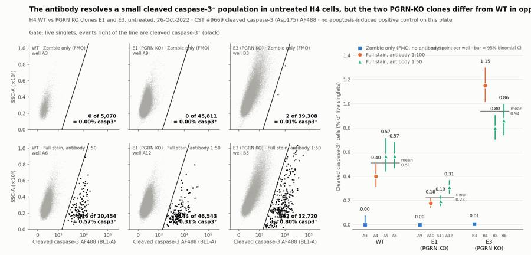
85
tool call · Bash
cd /task/work; python3 -I - <<'EOF'
s=open('final.py').read()
s=s.replace(""" ax.text(0.03,0.97,f'{nm} · {lab}\\nwell {well}',transform=ax.transAxes,va='top',fontsize=9,color=INK2)
ax.text(0.97,0.06,f"{int(pos.sum())} of {len(pos):,}\\n= {100*pos.mean():.2f}% casp3⁺",transform=ax.transAxes,ha='right',va='bottom',fontsize=10,color=INK,fontweight='bold')""",
""" ax.set_title(f'{nm} · {lab} · {well}',loc='left',fontsize=9,color=INK2,pad=4)
ax.text(0.985,0.97,f"{100*pos.mean():.2f}% casp3⁺\\n{int(pos.sum())} of {len(pos):,}",transform=ax.transAxes,ha='right',va='top',fontsize=10,color=INK,fontweight='bold',linespacing=1.3)""")
s=s.replace("lab='Zombie only (FMO)' if i<3 else 'Full stain, antibody 1:50'","lab='Zombie only (FMO)' if i<3 else 'full stain 1:50'")
s=s.replace("gsp=fig.add_gridspec(2,5,width_ratios=[1,1,1,0.12,1.9],left=0.055,right=0.985,top=0.83,bottom=0.1,wspace=0.12,hspace=0.16)",
"gsp=fig.add_gridspec(2,5,width_ratios=[1,1,1,0.12,1.9],left=0.055,right=0.985,top=0.80,bottom=0.1,wspace=0.12,hspace=0.2)")
s=s.replace("fig.text(0.055,0.865,'Gate: live singlets, events right of the line are cleaved caspase-3⁺ (black)',fontsize=10.5,color=INK2)",
"fig.text(0.055,0.845,'Live singlets; events right of the gate line are cleaved caspase-3⁺ (black)',fontsize=10.5,color=INK2)\nfig.text(0.648,0.845,'One point per well; bar = 95% binomial CI; line = mean of the 3 stained wells',fontsize=10.5,color=INK2)")
s=s.replace("ax.text(0.99,0.985,'one point per well · bar = 95% binomial CI',transform=ax.transAxes,ha='right',va='top',fontsize=8.5,color=INK2)\n","")
s=s.replace("fig.text(0.055,0.955,'The antibody resolves a small cleaved caspase-3⁺ population in untreated H4 cells, but the two PGRN-KO clones differ from WT in opposite directions',fontsize=13.5,fontweight='bold',color=INK)",
"fig.text(0.055,0.955,'The antibody resolves a small cleaved caspase-3⁺ population in untreated H4 cells;\\nthe two PGRN-KO clones differ from WT in opposite directions',fontsize=13.5,fontweight='bold',color=INK,va='top',linespacing=1.35)")
s=s.replace("fig.text(0.055,0.915,'H4 WT vs","fig.text(0.055,0.885,'H4 WT vs")
s=s.replace("fig=plt.figure(figsize=(15,7.2),facecolor=SURF)","fig=plt.figure(figsize=(15,7.6),facecolor=SURF)")
open('final.py','w').write(s)
EOF
python3 -I final.py >/dev/null && echo ok86
tool call · Read
{
"file_path": "/task/outputs/figure.png"
}87
tool output
ok
88
tool output
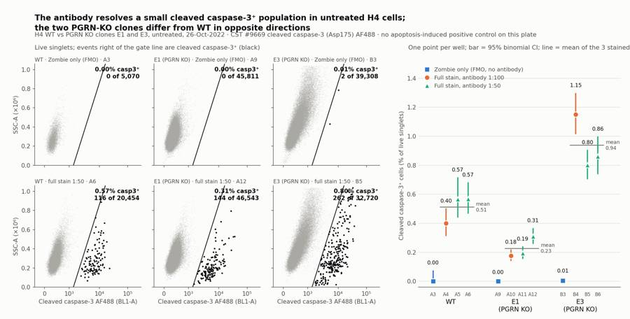
90
tool call · Bash
cd /task/work; python3 -I - <<'EOF'
s=open('final.py').read()
s=s.replace("ax.text(0.985,0.97,f\"{100*pos.mean():.2f}% casp3⁺\\n{int(pos.sum())} of {len(pos):,}\",transform=ax.transAxes,ha='right',va='top'","ax.text(0.03,0.97,f\"{100*pos.mean():.2f}% casp3⁺ ({int(pos.sum())} of {len(pos):,})\",transform=ax.transAxes,ha='left',va='top'")
s=s.replace("ax.set_ylim(0,1.06)","ax.set_ylim(0,1.25); ax.set_yticks([0,0.2,0.4,0.6,0.8,1.0])")
s=s.replace("yy=np.array([0,1.1e6])","yy=np.array([0,1.04e6])")
s=s.replace("fig.text(0.648,0.845,'One point per well; bar = 95% binomial CI; line = mean of the 3 stained wells'","fig.text(0.648,0.845,'One point per well; bar = 95% binomial CI; line = stained-well mean'")
s=s.replace("fig.text(0.055,0.885,'H4 WT vs","fig.text(0.055,0.878,'H4 WT vs")
s=s.replace("fig.text(0.055,0.955,","fig.text(0.055,0.97,")
open('final.py','w').write(s)
EOF
python3 -I final.py >/dev/null && echo ok91
tool call · Read
{
"file_path": "/task/outputs/figure.png"
}92
tool output
ok
93
tool output
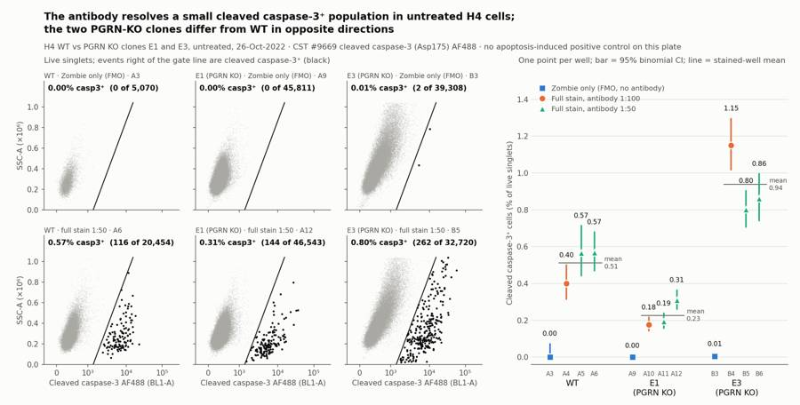
95
tool call · Bash
cd /task/work; sed -i 's|383/s plate-well mean|383 events/s file average|' final.py && python3 -I final.py >/dev/null; python3 -I - <<'EOF'
import flowkit as fk, numpy as np, pandas as pd
xf=fk.transforms.LogicleTransform(param_t=1048576,param_w=0.5,param_m=4.5,param_a=0)
for ssc in [0,200000,400000,1000000]:
print(ssc, xf.inverse(np.array([0.34+0.24e-6*ssc])))
for f in [200000,400000,1000000]: print(f, 10**(4.35+0.8e-6*f))
w=pd.read_csv('wide2.csv').set_index('well')
print((100*w['cells']/w['all_events']).round(1).to_dict())
print((100*w['singlets']/w['cells']).round(1).to_dict())
print((100*w['live']/w['singlets']).round(1).to_dict())
print((100*w['casp3_pos_all_singlets']/w['singlets']).round(3).to_dict())
print(pd.read_csv('/task/outputs/flags.csv').to_string())
EOF96
tool output
0 [1372.20326587]
200000 [2133.89261127]
400000 [3354.48673799]
1000000 [13880.64714689]
200000 32359.36569296281
400000 46773.51412871981
1000000 141253.75446227525
{'A1': 91.5, 'A2': 80.8, 'A3': 90.0, 'A4': 94.9, 'A5': 96.0, 'A6': 95.9, 'A7': 95.8, 'A8': 96.7, 'A9': 96.2, 'A10': 96.4, 'A11': 95.8, 'A12': 94.9, 'B1': 86.9, 'B2': 88.1, 'B3': 88.3, 'B4': 88.1, 'B5': 90.1, 'B6': 89.5}
{'A1': 99.6, 'A2': 99.8, 'A3': 99.6, 'A4': 99.2, 'A5': 99.4, 'A6': 99.5, 'A7': 99.6, 'A8': 99.1, 'A9': 99.4, 'A10': 99.2, 'A11': 99.3, 'A12': 99.4, 'B1': 99.4, 'B2': 99.3, 'B3': 99.2, 'B4': 99.3, 'B5': 99.3, 'B6': 99.5}
{'A1': 100.0, 'A2': 100.0, 'A3': 98.5, 'A4': 98.3, 'A5': 98.8, 'A6': 97.7, 'A7': 100.0, 'A8': 100.0, 'A9': 97.2, 'A10': 97.2, 'A11': 97.4, 'A12': 96.7, 'B1': 100.0, 'B2': 100.0, 'B3': 97.5, 'B4': 96.8, 'B5': 97.3, 'B6': 96.7}
{'A1': 0.0, 'A2': 0.867, 'A3': 0.0, 'A4': 0.393, 'A5': 0.559, 'A6': 0.559, 'A7': 0.0, 'A8': 0.162, 'A9': 0.0, 'A10': 0.174, 'A11': 0.193, 'A12': 0.303, 'B1': 0.0, 'B2': 1.126, 'B3': 0.005, 'B4': 1.164, 'B5': 0.791, 'B6': 0.861}
file well issue_type evidence decision
0 Caspase_h4_mlk(4)_caspase_Group_A1_WT_no stain.fcs A1 none NaN keep
1 Caspase_h4_mlk(4)_caspase_Group_A2_Wt_caspase_1-100.fcs A2 too_few_events Only 3149 events acquired and 2538 singlets (<5000), the lowest on the plate (E1 wells: 33911-58936 events); casp3_pos rests on 22 events (0.87% of live, 95% CI 0.54-1.31%). Single-stain control only; not used in any comparison. keep_with_note
2 Caspase_h4_mlk(4)_caspase_Group_A3_Wt_zombie.fcs A3 none NaN keep
3 Caspase_h4_mlk(4)_caspase_Group_A4_Wt-1_1-100.fcs A4 none NaN keep
4 Caspase_h4_mlk(4)_caspase_Group_A5_wt-2_1-50.fcs A5 none NaN keep
5 Caspase_h4_mlk(4)_caspase_Group_A6_wt3_1-50.fcs A6 none NaN keep
6 Caspase_h4_mlk(4)_caspase_Group_A7_E1_no stain.fcs A7 none
… [7,010 more characters not shown]98
tool call · Bash
cd /task/work; cat > /task/outputs/report.md <<'EOF'
# H4 cleaved caspase-3 intracellular flow, plate of 26-Oct-2022 (EXP22004082)
## Question
Does the Cell Signaling cleaved caspase-3 (Asp175) Alexa Fluor 488 antibody (#9669), used in the fix/perm intracellular protocol, give a specific and measurable caspase-3 signal by flow in H4 cells? Two sub-questions follow from the plate design:
- Is 1:50 better than 1:100?
- Do the PGRN-KO clones (E1, E3) show more cleaved caspase-3 than WT, as the background expects?
## Methods
- **Data.** 18 Attune NxT files, one per well; about 98 s and 162–164 µL acquired per well. All 18 were analysed and none was excluded.
- **Detectors.** The channel labels stored in the files ("AAV-GFP", "LiveDead-Zombie NIR") are left over from an older template. Following the plan's voltage note and reagents, BL1-A is the cleaved caspase-3 AF488 antibody and RL3-A is Zombie NIR. The single-stain wells confirm this: Zombie-only wells shift only in RL3 (median about 12,000–21,600 vs about 110–180 unstained), and antibody-only wells gain a bright BL1 population with no RL3 shift.
- **Compensation.** None (`uncompensated`). The file matrix is identity, and neither dye shows in the other detector in the single-stain wells (Zombie-only BL1 medians 234–396 vs 244–390 unstained).
- **Gating.** One FlowKit strategy (`gates.xml`) applied identically to every well; fluorescence gates are drawn on a logicle axis (T = 1048576, W = 0.5, M = 4.5, A = 0).
| Population | Parent | Gate | Result |
|---|---|---|---|
| `cells` | all events | FSC-A vs SSC-A polygon: FSC-A above 200,000 (debris out), both axes below 1,040,000 (off-scale events out), low SSC kept because the caspase⁺ cells sit there | 81–97% of events |
| `singlets` | `cells` | FSC-H vs FSC-A band, H/A about 0.32–0.75 | 99.1–99.8% |
| `live` | `singlets` | Zombie NIR below a boundary that rises with cell size (RL3-A about 32,000 at FSC-A 200,000, about 141,000 at 1,000,000) | 96.7–98.8% in Zombie-stained wells |
| `casp3_pos` | `live` | BL1-A right of a diagonal that follows autofluorescence up SSC-A (about 1,370 at SSC 0; 3,350 at 400,000; 13,900 at 1,000,000) | see Results |
| `dead` | `singlets` | complement of `live` | 1.2–3.3% |
| `casp3_pos_all_singlets` | `singlets` | same BL1 gate, no viability gate | within 0.02 percentage points of `casp3_pos` |
| `casp3_pos_dead` | `dead` | same BL1 gate | 0–12 events per well |
- **Why the diagonal gates.** Dim Zombie uptake by live cells and BL1 autofluorescence both scale with cell size, and E3 cells are much larger and more autofluorescent than WT or E1. A vertical threshold would call large E3 cells dead or caspase⁺.
- **Wells without Zombie NIR** (unstained and antibody-only) pass the `live` gate entirely, so their "live" is simply singlets.
- **Metric.** `casp3_pos` / `live`, as % of live singlets, per well; no normalisation. Conditions are cell line × stain; "pooled" is the three fully stained wells of a line (one at 1:100, two at 1:50). Error bars in the figure are 95% exact binomial intervals per well.
## Results
**The antibody stains a small, discrete population that is absent without it.**
- Zombie-only (FMO) wells: 0 of 5,070 (WT), 0 of 45,811 (E1), 2 of 39,308 (E3, 0.005%). Unstained wells: 0 in all three lines.
- Every antibody-stained well has a separate BL1-bright cluster: median BL1-A 5,250–8,700 against a negative median of 280–470.
- The positive cells have lower side scatter than the bulk (median SSC-A about 182,000–309,000 vs 278,000–395,000) and are Zombie-dim, i.e. membrane-intact.
**Cleaved caspase-3⁺ cells, % of live singlets, fully stained wells**
| Line | 1:100 (n = 1) | 1:50 (n = 2) | Pooled mean ± SD (n = 3) | Zombie-only FMO |
|---|---|---|---|---|
| WT | 0.40 (A4) | 0.57, 0.57 (A5, A6) | 0.51 ± 0.10 | 0.000 |
| E1 (PGRN KO) | 0.18 (A10) | 0.19, 0.31 (A11, A12) | 0.23 ± 0.07 | 0.000 |
| E3 (PGRN KO) | 1.15 (B4) | 0.80, 0.86 (B5, B6) | 0.94 ± 0.19 | 0.005 |
- **PGRN KO vs WT.** The two KO clones move in opposite directions: E1 is about 0.45× WT and E3 about 1.8× WT. The order E1 < WT < E3 holds in the 1:100 wells, the 1:50 wells and the antibody-only wells (0.16%, 0.87%, 1.13%). There is therefore a reproducible difference between lines on this plate, but no consistent effect of PGRN loss.
- **1:50 vs 1:100.** No clear gain from 1:50. The positive fraction is higher at 1:50 in WT (0.57 vs 0.40) and E1 (0.25 vs 0.18) but lower in E3 (0.83 vs 1.15). The positive cluster is only 1.0–1.4× brighter at 1:50, and the negative population also rises (for example WT median 290 → 314–322), so separation barely changes.
- **Gate position.** Shifting the caspase gate by ±0.03 logicle units changes each well by about ±0.02–0.19 percentage points and leaves the ranking of lines unchanged.
- **Zombie-high (dead) cells.** 1.2–2.3% of singlets in WT, 2.6–3.3% in E1 and 2.5–3.3% in E3. Both KO clones are slightly higher than WT, but the difference is about 1 percentage point. Dead cells are not enriched for cleaved caspase-3 (0–12 positive events per well).
**QC.**
- Event rate and signal were stable through every acquisition; no clog or dry run.
- Staining matches the plate map in every well; no mislabels.
- A2 (WT antibody-only) has only 3,149 events and 2,538 singlets. It is kept with a note and used in no comparison.
- All six E3 wells have 2.7–3.7% of events at the FSC-A maximum and 3.3–4.0% at the SSC-A maximum; these are gated out. Kept with a note.
- B5 began with about 2 s of almost no events, then a short burst; the burst events look like the rest of the file.
## Conclusion
Partly. The staining protocol works technically: the antibody resolves a clean cleaved-caspase-3⁺ population with essentially zero background in the FMO controls, in all three lines, and 1:100 is as good as 1:50. What the plate cannot show is that this population reports apoptosis, or that the assay responds when caspase-3 is activated, because every well was untreated and b
… [9,471 more characters not shown]99
tool output
role
cells [cells]
live [live]
marker_positive [casp3_pos]
other [all_events, dead, casp3_pos_all_singlets, cas...
singlets [singlets]
Name: population, dtype: object
file well population role parent count pct_of_parent
40 Caspase_h4_mlk(4)_caspase_Group_A6_wt3_1-50.fcs A6 all_events other none 21946 NaN
41 Caspase_h4_mlk(4)_caspase_Group_A6_wt3_1-50.fcs A6 cells cells all_events 21038 95.8626
42 Caspase_h4_mlk(4)_caspase_Group_A6_wt3_1-50.fcs A6 singlets singlets cells 20927 99.4724
43 Caspase_h4_mlk(4)_caspase_Group_A6_wt3_1-50.fcs A6 live live singlets 20454 97.7398
44 Caspase_h4_mlk(4)_caspase_Group_A6_wt3_1-50.fcs A6 casp3_pos marker_positive live 116 0.5671
45 Caspase_h4_mlk(4)_caspase_Group_A6_wt3_1-50.fcs A6 dead other singlets 473 2.2602
46 Caspase_h4_mlk(4)_caspase_Group_A6_wt3_1-50.fcs A6 casp3_pos_all_singlets other singlets 117 0.5591
47 Caspase_h4_mlk(4)_caspase_Group_A6_wt3_1-50.fcs A6 casp3_pos_dead other dead 1 0.2114
Caspase_h4_mlk(4)_caspase_Group_A1_WT_no stain.fcs,A1,all_events,other,none,6969,
all checks ok
['report.md', 'flags.csv', 'answer.json', 'condition_summary.csv', 'counts.csv', 'figure.png', 'gates.xml']101
agent
Status: all deliverables are written and validated against the saved gates; making final wording corrections to the report.
102
tool call · Bash
cd /task/outputs; sed -i 's/median BL1-A 5,250–8,700 against/median BL1-A 4,600–8,700 against/; s/about 182,000–309,000 vs 278,000–395,000/about 182,000–314,000 vs 262,000–395,000/; s/changes each well by about ±0.02–0.19 percentage points/changes each well by 0.01–0.20 percentage points/' report.md; grep -n "4,600\|314,000\|0.01–0.20" report.md | cut -c1-120; grep -c "" counts.csv; grep "A1,casp3_pos_dead\|B1,casp3_pos_dead" counts.csv; grep -n "^## " report.md; python3 -I -c "import json;json.load(open('answer.json'));print('json ok')"103
tool output
36:- Every antibody-stained well has a separate BL1-bright cluster: median BL1-A 4,600–8,700 against a negative median 37:- The positive cells have lower side scatter than the bulk (median SSC-A about 182,000–314,000 vs 262,000–395,000 49:- **Gate position.** Shifting the caspase gate by ±0.03 logicle units changes each well by 0.01–0.20 percentage po 145 Caspase_h4_mlk(4)_caspase_Group_A1_WT_no stain.fcs,A1,casp3_pos_dead,other,dead,0, Caspase_h4_mlk(4)_caspase_Group_B1_E3_no stain.fcs,B1,casp3_pos_dead,other,dead,0, 3:## Question 10:## Methods 31:## Results 60:## Conclusion 64:## Caveats 74:## Recommendation json ok
104
agent
The plate is analysed and all seven deliverables are in `/task/outputs/`; the saved gates reload and reproduce every count in `counts.csv`.
**Answer to the plan's question: partial.** The cleaved caspase-3 AF488 antibody stains a small, clean population in untreated H4 cells, but the plate cannot show that the assay responds to caspase-3 activation, and it does not show a PGRN-KO effect.
- **Specific staining:** fully stained wells have 0.18–1.15% cleaved-caspase-3⁺ cells among live singlets, against 0.000–0.005% in the Zombie-only controls and zero in unstained wells.
- **PGRN KO vs WT:** the two KO clones move in opposite directions, so there is no consistent genotype effect.
| Line | % caspase-3⁺ of live singlets (mean of 3 stained wells) |
|---|---|
| WT | 0.51 |
| E1 (KO) | 0.23 |
| E3 (KO) | 0.94 |
- **1:50 vs 1:100:** no clear gain from 1:50. The positive fraction rises in WT and E1 but falls in E3, and separation barely changes, so 1:100 is sufficient.
- **Missing control:** every well was untreated, so there is no induced sample to confirm the bright cells are apoptotic or to show dynamic range.
**QC:** no wells are excluded. Seven are kept with a note:
- **A2** (WT antibody-only) has only 3,149 events and 22 positive events; it is used in no comparison.
- **B1–B6** (all E3 wells) have about 3–4% of events off scale on forward and side scatter, which the gates remove.
The channel labels in the files are stale: I treated BL1-A as the caspase antibody and RL3-A as Zombie NIR, which the single-stain wells confirm.
**Recommendation:** verdict `needs_optimisation`, next action `change_treatment_or_timing`. Add a camptothecin-treated arm with a DMSO vehicle control for each line, stained at 1:100. The 5 µM for 24 h starting dose is my suggestion from general practice, not something this plate supports. The report also recommends collecting floating cells at harvest, since aspirating the media discards detached apoptotic cells.
Two judgement calls you may want to revisit:
- **Next-action label:** I chose `change_treatment_or_timing` over `repeat_with_change` because the essential change is adding an inducing treatment. If you read "add a positive control" as a repeat with a change, the label flips but the recommendation does not.
- **Extra populations:** I added three populations beyond the required four (`dead`, `casp3_pos_all_singlets`, `casp3_pos_dead`), all with role `other`. They show that the viability gate barely affects the caspase readout.
Files are in `/task/outputs/`:
- gates.xml
- counts.csv
- flags.csv
- condition_summary.csv
- figure.png
- report.md
- answer.json
final result
The plate is analysed and all seven deliverables are in `/task/outputs/`; the saved gates reload and reproduce every count in `counts.csv`. **Answer to the plan's question: partial.** The cleaved caspase-3 AF488 antibody stains a small, clean population in untreated H4 cells, but the plate cannot show that the assay responds to caspase-3 activation, and it does not show a PGRN-KO effect. - **Specific staining:** fully stained wells have 0.18–1.15% cleaved-caspase-3⁺ cells among live singlets, against 0.000–0.005% in the Zombie-only controls and zero in unstained wells. - **PGRN KO vs WT:** the two KO clones move in opposite directions, so there is no consistent genotype effect. | Line | % caspase-3⁺ of live singlets (mean of 3 stained wells) | |---|---| | WT | 0.51 | | E1 (KO) | 0.23 | | E3 (KO) | 0.94 | - **1:50 vs 1:100:** no clear gain from 1:50. The positive fraction rises in WT and E1 but falls in E3, and separation barely changes, so 1:100 is sufficient. - **Missing control:** every well was untreated, so there is no induced sample to confirm the bright cells are apoptotic or to show dynamic range. **QC:** no wells are excluded. Seven are kept with a note: - **A2** (WT antibody-only) has only 3,149 events and 22 positive events; it is used in no comparison. - **B1–B6** (all E3 wells) have about 3–4% of events off scale on forward and side scatter, which the gates remove. The channel labels in the files are stale: I treated BL1-A as the caspase antibody and RL3-A as Zombie NIR, which the single-stain wells confirm. **Recommendation:** verdict `needs_optimisation`, next action `change_treatment_or_timing`. Add a camptothecin-treated arm with a DMSO vehicle control for each line, stained at 1:100. The 5 µM for 24 h starting dose is my suggestion from general practice, not something this plate supports. The report also recommends collecting floating cells at harvest, since aspirating the media discards detached apoptotic cells. Two judgement calls you may want to revisit: - **Next-action label:** I chose `change_treatment_or_timing` over `repeat_with_change` because the essential change is adding an inducing treatment. If you read "add a positive control" as a repeat with a change, the label flips but the recommendation does not. - **Extra populations:** I added three populations beyond the required four (`dead`, `casp3_pos_all_singlets`, `casp3_pos_dead`), all with role `other`. They show that the viability gate barely affects the caspase readout. Files are in `/task/outputs/`: - gates.xml - counts.csv - flags.csv - condition_summary.csv - figure.png - report.md - answer.json